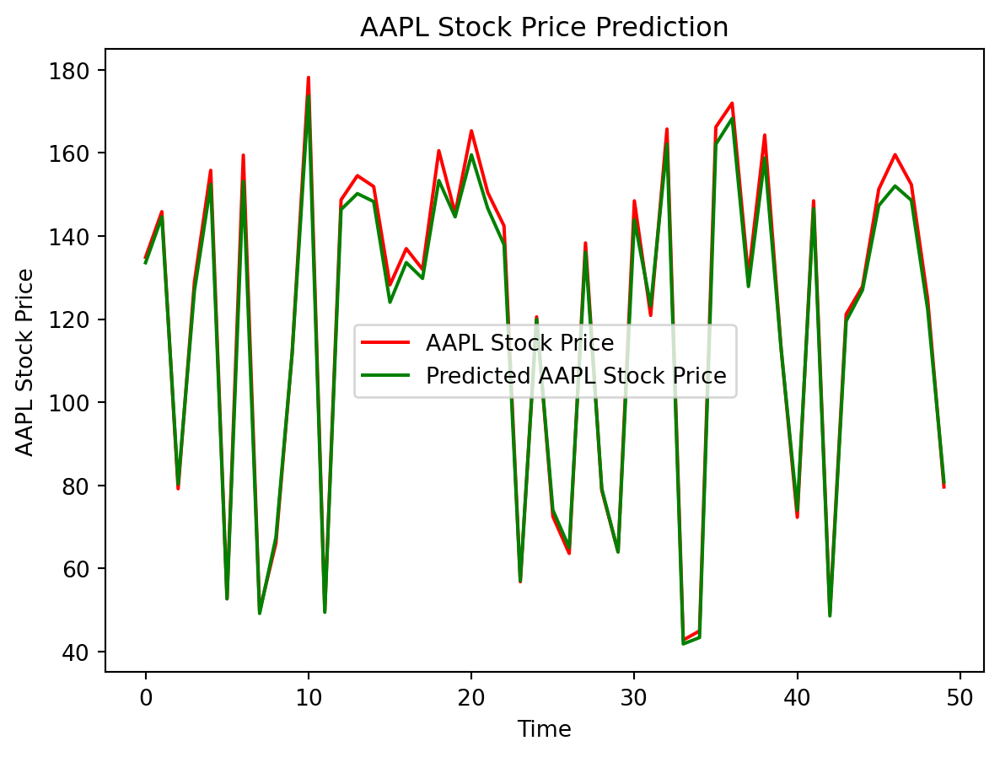

!pip install tensorflow
!pip install keras
!pip install matplotlib
import yfinance as yf
from datetime import datetime
import pandas as pd
import numpy as np
import matplotlib
#Stocks that we'll be analyzing
AAPL = ['AAPL']
GM = ['GM']
#Set start and end date for the data pull
#We want to look at the past 5 years, so we'll pull the previous 5 years of data
end_time = datetime.now()
start_time = datetime(end_time.year - 5, end_time.month, end_time.day)
#download the stocks we want to model
AAPL = yf.download(AAPL, start_time, end_time)
#Adding additional columns
AAPL['pct_change'] = AAPL.Close.pct_change(periods = 1)
AAPL['EMA20'] = AAPL['Close'].ewm(span=20).mean()
AAPL.head(10)
#Correlation Analysis
correlation = AAPL.corr()
print(correlation['Close'].sort_values(ascending=False))
#Defining X and y variable
X = AAPL[['Open','High', 'Low', 'Volume']]
X.head(10)
y = AAPL['Close']
y.head(10)
#Converting to array
X = X.to_numpy()
y = y.to_numpy()
#Splitting our data into 80/20 training/testing sets
from sklearn.model_selection import train_test_split
LSTM_Xtrain, LSTM_Xtest, LSTM_ytrain, LSTM_ytest = train_test_split(X, y, test_size=0.2, random_state=1)
print(LSTM_Xtrain)
# Stacked LSTM model
import tensorflow as tf
import keras as ke
from tensorflow.keras.layers import LSTM
from tensorflow.keras.layers import Dense
from tensorflow.keras.layers import Dropout
LSTM_model = ke.Sequential()
LSTM_model.add(LSTM(128, return_sequences=True, input_shape=(LSTM_Xtrain.shape[1], 1)))
LSTM_model.add(LSTM(64, return_sequences=False))
LSTM_model.add(Dense(25, activation='linear'))
LSTM_model.add(Dense(1))
LSTM_model.summary()
LSTM_model.compile(optimizer='rmsprop' , loss= 'mean_squared_error', metrics=['accuracy'])
LSTM_model.fit(LSTM_Xtrain, LSTM_ytrain, batch_size=32, epochs=150)
loss, accuracy = LSTM_model.evaluate(LSTM_Xtest, LSTM_ytest)
predictions = LSTM_model.predict(LSTM_Xtest)
predictions.reshape(252,)
#Predict 11/03/23 price = $177.57
In_features = np.array([[175.52, 177.78, 175.46, 76083900]])
LSTM_model.predict(In_features)
print("The predicted stock price for 11/03/23 is $ ", LSTM_model.predict(In_features),".", " The actual stock price for 11/03/23 is $177.57")
#Plot the first 50 predictions vs the actual y values
import matplotlib.pyplot as plt
LSTM_ytest = LSTM_ytest.reshape(252, 1)
plt.plot(LSTM_ytest[:50], 'red', label = 'AAPL Stock Price')
plt.plot(predictions[:50], color = 'green', label = 'Predicted AAPL Stock Price')
plt.title('AAPL Stock Price Prediction')
plt.xlabel('Time')
plt.ylabel('AAPL Stock Price')
plt.legend()
plt.show()Requirement already satisfied: tensorflow in c:\users\moise\appdata\local\programs\python\python310\lib\site-packages (2.14.0)
Requirement already satisfied: tensorflow-intel==2.14.0 in c:\users\moise\appdata\local\programs\python\python310\lib\site-packages (from tensorflow) (2.14.0)
Requirement already satisfied: absl-py>=1.0.0 in c:\users\moise\appdata\local\programs\python\python310\lib\site-packages (from tensorflow-intel==2.14.0->tensorflow) (2.0.0)
Requirement already satisfied: astunparse>=1.6.0 in c:\users\moise\appdata\local\programs\python\python310\lib\site-packages (from tensorflow-intel==2.14.0->tensorflow) (1.6.3)
Requirement already satisfied: flatbuffers>=23.5.26 in c:\users\moise\appdata\local\programs\python\python310\lib\site-packages (from tensorflow-intel==2.14.0->tensorflow) (23.5.26)
Requirement already satisfied: gast!=0.5.0,!=0.5.1,!=0.5.2,>=0.2.1 in c:\users\moise\appdata\local\programs\python\python310\lib\site-packages (from tensorflow-intel==2.14.0->tensorflow) (0.5.4)
Requirement already satisfied: google-pasta>=0.1.1 in c:\users\moise\appdata\local\programs\python\python310\lib\site-packages (from tensorflow-intel==2.14.0->tensorflow) (0.2.0)
Requirement already satisfied: h5py>=2.9.0 in c:\users\moise\appdata\local\programs\python\python310\lib\site-packages (from tensorflow-intel==2.14.0->tensorflow) (3.10.0)
Requirement already satisfied: libclang>=13.0.0 in c:\users\moise\appdata\local\programs\python\python310\lib\site-packages (from tensorflow-intel==2.14.0->tensorflow) (16.0.6)
Requirement already satisfied: ml-dtypes==0.2.0 in c:\users\moise\appdata\local\programs\python\python310\lib\site-packages (from tensorflow-intel==2.14.0->tensorflow) (0.2.0)
Requirement already satisfied: numpy>=1.23.5 in c:\users\moise\appdata\local\programs\python\python310\lib\site-packages (from tensorflow-intel==2.14.0->tensorflow) (1.24.4)
Requirement already satisfied: opt-einsum>=2.3.2 in c:\users\moise\appdata\local\programs\python\python310\lib\site-packages (from tensorflow-intel==2.14.0->tensorflow) (3.3.0)
Requirement already satisfied: packaging in c:\users\moise\appdata\local\programs\python\python310\lib\site-packages (from tensorflow-intel==2.14.0->tensorflow) (21.3)
Requirement already satisfied: protobuf!=4.21.0,!=4.21.1,!=4.21.2,!=4.21.3,!=4.21.4,!=4.21.5,<5.0.0dev,>=3.20.3 in c:\users\moise\appdata\local\programs\python\python310\lib\site-packages (from tensorflow-intel==2.14.0->tensorflow) (4.24.4)
Requirement already satisfied: setuptools in c:\users\moise\appdata\local\programs\python\python310\lib\site-packages (from tensorflow-intel==2.14.0->tensorflow) (68.2.2)
Requirement already satisfied: six>=1.12.0 in c:\users\moise\appdata\local\programs\python\python310\lib\site-packages (from tensorflow-intel==2.14.0->tensorflow) (1.16.0)
Requirement already satisfied: termcolor>=1.1.0 in c:\users\moise\appdata\local\programs\python\python310\lib\site-packages (from tensorflow-intel==2.14.0->tensorflow) (2.3.0)
Requirement already satisfied: typing-extensions>=3.6.6 in c:\users\moise\appdata\local\programs\python\python310\lib\site-packages (from tensorflow-intel==2.14.0->tensorflow) (4.8.0)
Requirement already satisfied: wrapt<1.15,>=1.11.0 in c:\users\moise\appdata\local\programs\python\python310\lib\site-packages (from tensorflow-intel==2.14.0->tensorflow) (1.14.1)
Requirement already satisfied: tensorflow-io-gcs-filesystem>=0.23.1 in c:\users\moise\appdata\local\programs\python\python310\lib\site-packages (from tensorflow-intel==2.14.0->tensorflow) (0.31.0)
Requirement already satisfied: grpcio<2.0,>=1.24.3 in c:\users\moise\appdata\local\programs\python\python310\lib\site-packages (from tensorflow-intel==2.14.0->tensorflow) (1.59.0)
Requirement already satisfied: tensorboard<2.15,>=2.14 in c:\users\moise\appdata\local\programs\python\python310\lib\site-packages (from tensorflow-intel==2.14.0->tensorflow) (2.14.1)
Requirement already satisfied: tensorflow-estimator<2.15,>=2.14.0 in c:\users\moise\appdata\local\programs\python\python310\lib\site-packages (from tensorflow-intel==2.14.0->tensorflow) (2.14.0)
Requirement already satisfied: keras<2.15,>=2.14.0 in c:\users\moise\appdata\local\programs\python\python310\lib\site-packages (from tensorflow-intel==2.14.0->tensorflow) (2.14.0)
Requirement already satisfied: wheel<1.0,>=0.23.0 in c:\users\moise\appdata\local\programs\python\python310\lib\site-packages (from astunparse>=1.6.0->tensorflow-intel==2.14.0->tensorflow) (0.41.2)
Requirement already satisfied: google-auth<3,>=1.6.3 in c:\users\moise\appdata\local\programs\python\python310\lib\site-packages (from tensorboard<2.15,>=2.14->tensorflow-intel==2.14.0->tensorflow) (2.23.3)
Requirement already satisfied: google-auth-oauthlib<1.1,>=0.5 in c:\users\moise\appdata\local\programs\python\python310\lib\site-packages (from tensorboard<2.15,>=2.14->tensorflow-intel==2.14.0->tensorflow) (1.0.0)
Requirement already satisfied: markdown>=2.6.8 in c:\users\moise\appdata\local\programs\python\python310\lib\site-packages (from tensorboard<2.15,>=2.14->tensorflow-intel==2.14.0->tensorflow) (3.5)
Requirement already satisfied: requests<3,>=2.21.0 in c:\users\moise\appdata\local\programs\python\python310\lib\site-packages (from tensorboard<2.15,>=2.14->tensorflow-intel==2.14.0->tensorflow) (2.31.0)
Requirement already satisfied: tensorboard-data-server<0.8.0,>=0.7.0 in c:\users\moise\appdata\local\programs\python\python310\lib\site-packages (from tensorboard<2.15,>=2.14->tensorflow-intel==2.14.0->tensorflow) (0.7.2)
Requirement already satisfied: werkzeug>=1.0.1 in c:\users\moise\appdata\local\programs\python\python310\lib\site-packages (from tensorboard<2.15,>=2.14->tensorflow-intel==2.14.0->tensorflow) (3.0.1)
Requirement already satisfied: pyparsing!=3.0.5,>=2.0.2 in c:\users\moise\appdata\local\programs\python\python310\lib\site-packages (from packaging->tensorflow-intel==2.14.0->tensorflow) (3.0.9)
Requirement already satisfied: cachetools<6.0,>=2.0.0 in c:\users\moise\appdata\local\programs\python\python310\lib\site-packages (from google-auth<3,>=1.6.3->tensorboard<2.15,>=2.14->tensorflow-intel==2.14.0->tensorflow) (5.3.2)
Requirement already satisfied: pyasn1-modules>=0.2.1 in c:\users\moise\appdata\local\programs\python\python310\lib\site-packages (from google-auth<3,>=1.6.3->tensorboard<2.15,>=2.14->tensorflow-intel==2.14.0->tensorflow) (0.3.0)
Requirement already satisfied: rsa<5,>=3.1.4 in c:\users\moise\appdata\local\programs\python\python310\lib\site-packages (from google-auth<3,>=1.6.3->tensorboard<2.15,>=2.14->tensorflow-intel==2.14.0->tensorflow) (4.9)
Requirement already satisfied: requests-oauthlib>=0.7.0 in c:\users\moise\appdata\local\programs\python\python310\lib\site-packages (from google-auth-oauthlib<1.1,>=0.5->tensorboard<2.15,>=2.14->tensorflow-intel==2.14.0->tensorflow) (1.3.1)
Requirement already satisfied: charset-normalizer<4,>=2 in c:\users\moise\appdata\local\programs\python\python310\lib\site-packages (from requests<3,>=2.21.0->tensorboard<2.15,>=2.14->tensorflow-intel==2.14.0->tensorflow) (3.3.0)
Requirement already satisfied: idna<4,>=2.5 in c:\users\moise\appdata\local\programs\python\python310\lib\site-packages (from requests<3,>=2.21.0->tensorboard<2.15,>=2.14->tensorflow-intel==2.14.0->tensorflow) (3.4)
Requirement already satisfied: urllib3<3,>=1.21.1 in c:\users\moise\appdata\local\programs\python\python310\lib\site-packages (from requests<3,>=2.21.0->tensorboard<2.15,>=2.14->tensorflow-intel==2.14.0->tensorflow) (2.0.6)
Requirement already satisfied: certifi>=2017.4.17 in c:\users\moise\appdata\local\programs\python\python310\lib\site-packages (from requests<3,>=2.21.0->tensorboard<2.15,>=2.14->tensorflow-intel==2.14.0->tensorflow) (2023.7.22)
Requirement already satisfied: MarkupSafe>=2.1.1 in c:\users\moise\appdata\local\programs\python\python310\lib\site-packages (from werkzeug>=1.0.1->tensorboard<2.15,>=2.14->tensorflow-intel==2.14.0->tensorflow) (2.1.3)
Requirement already satisfied: pyasn1<0.6.0,>=0.4.6 in c:\users\moise\appdata\local\programs\python\python310\lib\site-packages (from pyasn1-modules>=0.2.1->google-auth<3,>=1.6.3->tensorboard<2.15,>=2.14->tensorflow-intel==2.14.0->tensorflow) (0.5.0)
Requirement already satisfied: oauthlib>=3.0.0 in c:\users\moise\appdata\local\programs\python\python310\lib\site-packages (from requests-oauthlib>=0.7.0->google-auth-oauthlib<1.1,>=0.5->tensorboard<2.15,>=2.14->tensorflow-intel==2.14.0->tensorflow) (3.2.2)Requirement already satisfied: keras in c:\users\moise\appdata\local\programs\python\python310\lib\site-packages (2.14.0)Requirement already satisfied: matplotlib in c:\users\moise\appdata\local\programs\python\python310\lib\site-packages (3.6.0)
Requirement already satisfied: contourpy>=1.0.1 in c:\users\moise\appdata\local\programs\python\python310\lib\site-packages (from matplotlib) (1.0.5)
Requirement already satisfied: cycler>=0.10 in c:\users\moise\appdata\local\programs\python\python310\lib\site-packages (from matplotlib) (0.11.0)
Requirement already satisfied: fonttools>=4.22.0 in c:\users\moise\appdata\local\programs\python\python310\lib\site-packages (from matplotlib) (4.37.4)
Requirement already satisfied: kiwisolver>=1.0.1 in c:\users\moise\appdata\local\programs\python\python310\lib\site-packages (from matplotlib) (1.4.4)
Requirement already satisfied: numpy>=1.19 in c:\users\moise\appdata\local\programs\python\python310\lib\site-packages (from matplotlib) (1.24.4)
Requirement already satisfied: packaging>=20.0 in c:\users\moise\appdata\local\programs\python\python310\lib\site-packages (from matplotlib) (21.3)
Requirement already satisfied: pillow>=6.2.0 in c:\users\moise\appdata\local\programs\python\python310\lib\site-packages (from matplotlib) (9.2.0)
Requirement already satisfied: pyparsing>=2.2.1 in c:\users\moise\appdata\local\programs\python\python310\lib\site-packages (from matplotlib) (3.0.9)
Requirement already satisfied: python-dateutil>=2.7 in c:\users\moise\appdata\local\programs\python\python310\lib\site-packages (from matplotlib) (2.8.2)
Requirement already satisfied: six>=1.5 in c:\users\moise\appdata\local\programs\python\python310\lib\site-packages (from python-dateutil>=2.7->matplotlib) (1.16.0)[*********************100%%**********************] 1 of 1 completed
Close 1.000000
Adj Close 0.999940
Low 0.999613
High 0.999591
Open 0.999140
EMA20 0.994978
pct_change 0.003407
Volume -0.474508
Name: Close, dtype: float64[[1.74669998e+02 1.77080002e+02 1.74050003e+02 5.67254000e+07]
[1.57320007e+02 1.59399994e+02 1.56539993e+02 7.39383000e+07]
[1.32759995e+02 1.34800003e+02 1.30529999e+02 1.51948100e+08]
...
[1.56080002e+02 1.56740005e+02 1.54279999e+02 9.89446000e+07]
[5.90974998e+01 5.94124985e+01 5.87200012e+01 8.73600000e+07]
[1.43169998e+02 1.44250000e+02 1.41899994e+02 5.41051000e+07]]Model: "sequential"_________________________________________________________________ Layer (type) Output Shape Param # ================================================================= lstm (LSTM) (None, 4, 128) 66560 lstm_1 (LSTM) (None, 64) 49408 dense (Dense) (None, 25) 1625 dense_1 (Dense) (None, 1) 26 =================================================================Total params: 117619 (459.45 KB)Trainable params: 117619 (459.45 KB)Non-trainable params: 0 (0.00 Byte)_________________________________________________________________Epoch 1/150 1/32 [..............................] - ETA: 1:22 - loss: 19738.9082 - accuracy: 0.0000e+00 8/32 [======>.......................] - ETA: 0s - loss: 17237.1797 - accuracy: 0.0000e+00 16/32 [==============>...............] - ETA: 0s - loss: 15884.0850 - accuracy: 0.0000e+0024/32 [=====================>........] - ETA: 0s - loss: 14480.7930 - accuracy: 0.0000e+0032/32 [==============================] - ETA: 0s - loss: 13693.3945 - accuracy: 0.0000e+0032/32 [==============================] - 3s 8ms/step - loss: 13693.3945 - accuracy: 0.0000e+00Epoch 2/150 1/32 [..............................] - ETA: 0s - loss: 12462.0342 - accuracy: 0.0000e+00 9/32 [=======>......................] - ETA: 0s - loss: 10771.4648 - accuracy: 0.0000e+0017/32 [==============>...............] - ETA: 0s - loss: 10575.2129 - accuracy: 0.0000e+0025/32 [======================>.......] - ETA: 0s - loss: 10010.7480 - accuracy: 0.0000e+0032/32 [==============================] - ETA: 0s - loss: 9544.8389 - accuracy: 0.0000e+00 32/32 [==============================] - 0s 8ms/step - loss: 9544.8389 - accuracy: 0.0000e+00Epoch 3/150 1/32 [..............................] - ETA: 0s - loss: 6944.8452 - accuracy: 0.0000e+00 8/32 [======>.......................] - ETA: 0s - loss: 7570.4897 - accuracy: 0.0000e+0016/32 [==============>...............] - ETA: 0s - loss: 6914.5962 - accuracy: 0.0000e+0025/32 [======================>.......] - ETA: 0s - loss: 6665.2236 - accuracy: 0.0000e+0032/32 [==============================] - 0s 8ms/step - loss: 6594.9927 - accuracy: 0.0000e+00Epoch 4/150 1/32 [..............................] - ETA: 0s - loss: 4860.1699 - accuracy: 0.0000e+00 9/32 [=======>......................] - ETA: 0s - loss: 4784.9785 - accuracy: 0.0000e+0017/32 [==============>...............] - ETA: 0s - loss: 4739.2417 - accuracy: 0.0000e+0026/32 [=======================>......] - ETA: 0s - loss: 4382.2173 - accuracy: 0.0000e+0032/32 [==============================] - 0s 8ms/step - loss: 4239.0898 - accuracy: 0.0000e+00Epoch 5/150 1/32 [..............................] - ETA: 0s - loss: 3293.3945 - accuracy: 0.0000e+00 7/32 [=====>........................] - ETA: 0s - loss: 3454.9568 - accuracy: 0.0000e+0016/32 [==============>...............] - ETA: 0s - loss: 3034.4834 - accuracy: 0.0000e+0024/32 [=====================>........] - ETA: 0s - loss: 2817.2810 - accuracy: 0.0000e+0031/32 [============================>.] - ETA: 0s - loss: 2679.3940 - accuracy: 0.0000e+0032/32 [==============================] - 0s 7ms/step - loss: 2668.6174 - accuracy: 0.0000e+00Epoch 6/150 1/32 [..............................] - ETA: 0s - loss: 1511.0653 - accuracy: 0.0000e+0010/32 [========>.....................] - ETA: 0s - loss: 1496.2480 - accuracy: 0.0000e+0018/32 [===============>..............] - ETA: 0s - loss: 1264.0807 - accuracy: 0.0000e+0026/32 [=======================>......] - ETA: 0s - loss: 1074.8788 - accuracy: 0.0000e+0032/32 [==============================] - 0s 7ms/step - loss: 974.5025 - accuracy: 0.0000e+00Epoch 7/150 1/32 [..............................] - ETA: 0s - loss: 333.6776 - accuracy: 0.0000e+00 9/32 [=======>......................] - ETA: 0s - loss: 420.8216 - accuracy: 0.0000e+0016/32 [==============>...............] - ETA: 0s - loss: 422.2042 - accuracy: 0.0000e+0024/32 [=====================>........] - ETA: 0s - loss: 362.5112 - accuracy: 0.0000e+0032/32 [==============================] - 0s 7ms/step - loss: 334.3699 - accuracy: 0.0000e+00Epoch 8/150 1/32 [..............................] - ETA: 0s - loss: 573.7593 - accuracy: 0.0000e+00 8/32 [======>.......................] - ETA: 0s - loss: 218.4008 - accuracy: 0.0000e+0017/32 [==============>...............] - ETA: 0s - loss: 194.0751 - accuracy: 0.0000e+0026/32 [=======================>......] - ETA: 0s - loss: 189.9267 - accuracy: 0.0000e+0032/32 [==============================] - 0s 7ms/step - loss: 178.6328 - accuracy: 0.0000e+00Epoch 9/150 1/32 [..............................] - ETA: 0s - loss: 89.3870 - accuracy: 0.0000e+00 8/32 [======>.......................] - ETA: 0s - loss: 131.4701 - accuracy: 0.0000e+0016/32 [==============>...............] - ETA: 0s - loss: 121.1306 - accuracy: 0.0000e+0023/32 [====================>.........] - ETA: 0s - loss: 123.1802 - accuracy: 0.0000e+0032/32 [==============================] - ETA: 0s - loss: 112.4929 - accuracy: 0.0000e+0032/32 [==============================] - 0s 8ms/step - loss: 112.4929 - accuracy: 0.0000e+00Epoch 10/150 1/32 [..............................] - ETA: 0s - loss: 97.0397 - accuracy: 0.0000e+00 8/32 [======>.......................] - ETA: 0s - loss: 111.8446 - accuracy: 0.0000e+0016/32 [==============>...............] - ETA: 0s - loss: 101.4018 - accuracy: 0.0000e+0025/32 [======================>.......] - ETA: 0s - loss: 94.7211 - accuracy: 0.0000e+00 32/32 [==============================] - 0s 8ms/step - loss: 92.1657 - accuracy: 0.0000e+00Epoch 11/150 1/32 [..............................] - ETA: 0s - loss: 33.2210 - accuracy: 0.0000e+00 9/32 [=======>......................] - ETA: 0s - loss: 44.8764 - accuracy: 0.0000e+0017/32 [==============>...............] - ETA: 0s - loss: 78.2856 - accuracy: 0.0000e+0025/32 [======================>.......] - ETA: 0s - loss: 72.1140 - accuracy: 0.0000e+0032/32 [==============================] - 0s 8ms/step - loss: 63.4159 - accuracy: 0.0000e+00Epoch 12/150 1/32 [..............................] - ETA: 0s - loss: 10.9100 - accuracy: 0.0000e+00 7/32 [=====>........................] - ETA: 0s - loss: 69.7850 - accuracy: 0.0000e+0015/32 [=============>................] - ETA: 0s - loss: 84.0843 - accuracy: 0.0000e+0024/32 [=====================>........] - ETA: 0s - loss: 78.6798 - accuracy: 0.0000e+0032/32 [==============================] - 0s 7ms/step - loss: 65.5962 - accuracy: 0.0000e+00Epoch 13/150 1/32 [..............................] - ETA: 0s - loss: 79.8899 - accuracy: 0.0000e+00 8/32 [======>.......................] - ETA: 0s - loss: 81.0331 - accuracy: 0.0000e+0017/32 [==============>...............] - ETA: 0s - loss: 64.7170 - accuracy: 0.0000e+0025/32 [======================>.......] - ETA: 0s - loss: 55.3580 - accuracy: 0.0000e+0032/32 [==============================] - 0s 8ms/step - loss: 52.9529 - accuracy: 0.0000e+00Epoch 14/150 1/32 [..............................] - ETA: 0s - loss: 62.0382 - accuracy: 0.0000e+00 9/32 [=======>......................] - ETA: 0s - loss: 65.1035 - accuracy: 0.0000e+0017/32 [==============>...............] - ETA: 0s - loss: 55.8634 - accuracy: 0.0000e+0026/32 [=======================>......] - ETA: 0s - loss: 61.7572 - accuracy: 0.0000e+0032/32 [==============================] - 0s 8ms/step - loss: 58.4753 - accuracy: 0.0000e+00Epoch 15/150 1/32 [..............................] - ETA: 0s - loss: 9.2074 - accuracy: 0.0000e+00 8/32 [======>.......................] - ETA: 0s - loss: 51.7565 - accuracy: 0.0000e+0016/32 [==============>...............] - ETA: 0s - loss: 45.5411 - accuracy: 0.0000e+0025/32 [======================>.......] - ETA: 0s - loss: 47.4400 - accuracy: 0.0000e+0032/32 [==============================] - 0s 8ms/step - loss: 44.2045 - accuracy: 0.0000e+00Epoch 16/150 1/32 [..............................] - ETA: 0s - loss: 37.5863 - accuracy: 0.0000e+00 9/32 [=======>......................] - ETA: 0s - loss: 52.9840 - accuracy: 0.0000e+0017/32 [==============>...............] - ETA: 0s - loss: 42.9788 - accuracy: 0.0000e+0026/32 [=======================>......] - ETA: 0s - loss: 47.0426 - accuracy: 0.0000e+0032/32 [==============================] - 0s 8ms/step - loss: 45.8406 - accuracy: 0.0000e+00Epoch 17/150 1/32 [..............................] - ETA: 0s - loss: 11.3373 - accuracy: 0.0000e+00 8/32 [======>.......................] - ETA: 0s - loss: 13.0337 - accuracy: 0.0000e+0017/32 [==============>...............] - ETA: 0s - loss: 40.8756 - accuracy: 0.0000e+0025/32 [======================>.......] - ETA: 0s - loss: 45.9202 - accuracy: 0.0000e+0032/32 [==============================] - 0s 8ms/step - loss: 37.8981 - accuracy: 0.0000e+00Epoch 18/150 1/32 [..............................] - ETA: 0s - loss: 14.1242 - accuracy: 0.0000e+00 9/32 [=======>......................] - ETA: 0s - loss: 61.7429 - accuracy: 0.0000e+0016/32 [==============>...............] - ETA: 0s - loss: 43.0628 - accuracy: 0.0000e+0024/32 [=====================>........] - ETA: 0s - loss: 42.8653 - accuracy: 0.0000e+0032/32 [==============================] - 0s 7ms/step - loss: 40.8658 - accuracy: 0.0000e+00Epoch 19/150 1/32 [..............................] - ETA: 0s - loss: 156.1328 - accuracy: 0.0000e+00 9/32 [=======>......................] - ETA: 0s - loss: 43.9195 - accuracy: 0.0000e+00 17/32 [==============>...............] - ETA: 0s - loss: 48.4433 - accuracy: 0.0000e+0025/32 [======================>.......] - ETA: 0s - loss: 36.7520 - accuracy: 0.0000e+0032/32 [==============================] - 0s 8ms/step - loss: 36.1183 - accuracy: 0.0000e+00Epoch 20/150 1/32 [..............................] - ETA: 0s - loss: 119.3088 - accuracy: 0.0000e+0010/32 [========>.....................] - ETA: 0s - loss: 33.7400 - accuracy: 0.0000e+00 16/32 [==============>...............] - ETA: 0s - loss: 25.7917 - accuracy: 0.0000e+0023/32 [====================>.........] - ETA: 0s - loss: 33.8809 - accuracy: 0.0000e+0032/32 [==============================] - ETA: 0s - loss: 29.8114 - accuracy: 0.0000e+0032/32 [==============================] - 0s 7ms/step - loss: 29.8114 - accuracy: 0.0000e+00Epoch 21/150 1/32 [..............................] - ETA: 0s - loss: 87.2998 - accuracy: 0.0000e+0010/32 [========>.....................] - ETA: 0s - loss: 51.8731 - accuracy: 0.0000e+0018/32 [===============>..............] - ETA: 0s - loss: 33.9750 - accuracy: 0.0000e+0026/32 [=======================>......] - ETA: 0s - loss: 42.0577 - accuracy: 0.0000e+0032/32 [==============================] - 0s 8ms/step - loss: 40.0160 - accuracy: 0.0000e+00Epoch 22/150 1/32 [..............................] - ETA: 0s - loss: 89.9754 - accuracy: 0.0000e+00 9/32 [=======>......................] - ETA: 0s - loss: 20.5943 - accuracy: 0.0000e+0017/32 [==============>...............] - ETA: 0s - loss: 21.9935 - accuracy: 0.0000e+0026/32 [=======================>......] - ETA: 0s - loss: 31.1342 - accuracy: 0.0000e+0032/32 [==============================] - 0s 8ms/step - loss: 29.1083 - accuracy: 0.0000e+00Epoch 23/150 1/32 [..............................] - ETA: 0s - loss: 1.4998 - accuracy: 0.0000e+00 8/32 [======>.......................] - ETA: 0s - loss: 30.4455 - accuracy: 0.0000e+0016/32 [==============>...............] - ETA: 0s - loss: 43.0638 - accuracy: 0.0000e+0025/32 [======================>.......] - ETA: 0s - loss: 33.4208 - accuracy: 0.0000e+0032/32 [==============================] - 0s 8ms/step - loss: 28.5472 - accuracy: 0.0000e+00Epoch 24/150 1/32 [..............................] - ETA: 0s - loss: 15.8508 - accuracy: 0.0000e+00 9/32 [=======>......................] - ETA: 0s - loss: 52.4048 - accuracy: 0.0000e+0018/32 [===============>..............] - ETA: 0s - loss: 28.7168 - accuracy: 0.0000e+0026/32 [=======================>......] - ETA: 0s - loss: 39.0287 - accuracy: 0.0000e+0032/32 [==============================] - 0s 7ms/step - loss: 34.5104 - accuracy: 0.0000e+00Epoch 25/150 1/32 [..............................] - ETA: 0s - loss: 12.2763 - accuracy: 0.0000e+0010/32 [========>.....................] - ETA: 0s - loss: 42.8219 - accuracy: 0.0000e+0018/32 [===============>..............] - ETA: 0s - loss: 30.0370 - accuracy: 0.0000e+0027/32 [========================>.....] - ETA: 0s - loss: 32.8006 - accuracy: 0.0000e+0032/32 [==============================] - 0s 7ms/step - loss: 31.7365 - accuracy: 0.0000e+00Epoch 26/150 1/32 [..............................] - ETA: 0s - loss: 94.2492 - accuracy: 0.0000e+00 9/32 [=======>......................] - ETA: 0s - loss: 19.1274 - accuracy: 0.0000e+0017/32 [==============>...............] - ETA: 0s - loss: 26.0448 - accuracy: 0.0000e+0025/32 [======================>.......] - ETA: 0s - loss: 26.6975 - accuracy: 0.0000e+0032/32 [==============================] - 0s 7ms/step - loss: 27.1933 - accuracy: 0.0000e+00Epoch 27/150 1/32 [..............................] - ETA: 0s - loss: 77.8201 - accuracy: 0.0000e+00 9/32 [=======>......................] - ETA: 0s - loss: 23.3501 - accuracy: 0.0000e+0017/32 [==============>...............] - ETA: 0s - loss: 32.2226 - accuracy: 0.0000e+0025/32 [======================>.......] - ETA: 0s - loss: 27.0518 - accuracy: 0.0000e+0032/32 [==============================] - 0s 8ms/step - loss: 27.9228 - accuracy: 0.0000e+00Epoch 28/150 1/32 [..............................] - ETA: 0s - loss: 47.0363 - accuracy: 0.0000e+00 8/32 [======>.......................] - ETA: 0s - loss: 25.1411 - accuracy: 0.0000e+0016/32 [==============>...............] - ETA: 0s - loss: 31.0047 - accuracy: 0.0000e+0023/32 [====================>.........] - ETA: 0s - loss: 27.2359 - accuracy: 0.0000e+0030/32 [===========================>..] - ETA: 0s - loss: 32.8703 - accuracy: 0.0000e+0032/32 [==============================] - 0s 8ms/step - loss: 32.4060 - accuracy: 0.0000e+00Epoch 29/150 1/32 [..............................] - ETA: 0s - loss: 22.7336 - accuracy: 0.0000e+00 8/32 [======>.......................] - ETA: 0s - loss: 14.4598 - accuracy: 0.0000e+0015/32 [=============>................] - ETA: 0s - loss: 24.6992 - accuracy: 0.0000e+0023/32 [====================>.........] - ETA: 0s - loss: 25.3608 - accuracy: 0.0000e+0032/32 [==============================] - ETA: 0s - loss: 25.1586 - accuracy: 0.0000e+0032/32 [==============================] - 0s 8ms/step - loss: 25.1586 - accuracy: 0.0000e+00Epoch 30/150 1/32 [..............................] - ETA: 0s - loss: 6.2610 - accuracy: 0.0000e+0010/32 [========>.....................] - ETA: 0s - loss: 30.9389 - accuracy: 0.0000e+0018/32 [===============>..............] - ETA: 0s - loss: 26.8859 - accuracy: 0.0000e+0026/32 [=======================>......] - ETA: 0s - loss: 27.5781 - accuracy: 0.0000e+0032/32 [==============================] - 0s 7ms/step - loss: 26.5844 - accuracy: 0.0000e+00Epoch 31/150 1/32 [..............................] - ETA: 0s - loss: 4.6851 - accuracy: 0.0000e+00 9/32 [=======>......................] - ETA: 0s - loss: 23.5870 - accuracy: 0.0000e+0016/32 [==============>...............] - ETA: 0s - loss: 25.0067 - accuracy: 0.0000e+0024/32 [=====================>........] - ETA: 0s - loss: 26.1157 - accuracy: 0.0000e+0032/32 [==============================] - 0s 7ms/step - loss: 25.0757 - accuracy: 0.0000e+00Epoch 32/150 1/32 [..............................] - ETA: 0s - loss: 54.4368 - accuracy: 0.0000e+00 9/32 [=======>......................] - ETA: 0s - loss: 26.3882 - accuracy: 0.0000e+0017/32 [==============>...............] - ETA: 0s - loss: 27.9461 - accuracy: 0.0000e+0026/32 [=======================>......] - ETA: 0s - loss: 19.8508 - accuracy: 0.0000e+0032/32 [==============================] - 0s 8ms/step - loss: 27.1298 - accuracy: 0.0000e+00Epoch 33/150 1/32 [..............................] - ETA: 0s - loss: 7.2283 - accuracy: 0.0000e+0010/32 [========>.....................] - ETA: 0s - loss: 18.2810 - accuracy: 0.0000e+0018/32 [===============>..............] - ETA: 0s - loss: 18.5893 - accuracy: 0.0000e+0025/32 [======================>.......] - ETA: 0s - loss: 24.8980 - accuracy: 0.0000e+0032/32 [==============================] - 0s 7ms/step - loss: 21.0328 - accuracy: 0.0000e+00Epoch 34/150 1/32 [..............................] - ETA: 0s - loss: 47.2600 - accuracy: 0.0000e+00 9/32 [=======>......................] - ETA: 0s - loss: 24.1025 - accuracy: 0.0000e+0017/32 [==============>...............] - ETA: 0s - loss: 19.7130 - accuracy: 0.0000e+0025/32 [======================>.......] - ETA: 0s - loss: 24.6242 - accuracy: 0.0000e+0032/32 [==============================] - 0s 8ms/step - loss: 22.6234 - accuracy: 0.0000e+00Epoch 35/150 1/32 [..............................] - ETA: 0s - loss: 54.1919 - accuracy: 0.0000e+0010/32 [========>.....................] - ETA: 0s - loss: 27.7005 - accuracy: 0.0000e+0018/32 [===============>..............] - ETA: 0s - loss: 26.9777 - accuracy: 0.0000e+0027/32 [========================>.....] - ETA: 0s - loss: 24.9127 - accuracy: 0.0000e+0032/32 [==============================] - 0s 7ms/step - loss: 25.9099 - accuracy: 0.0000e+00Epoch 36/150 1/32 [..............................] - ETA: 0s - loss: 14.6281 - accuracy: 0.0000e+00 9/32 [=======>......................] - ETA: 0s - loss: 24.0763 - accuracy: 0.0000e+0018/32 [===============>..............] - ETA: 0s - loss: 23.3796 - accuracy: 0.0000e+0026/32 [=======================>......] - ETA: 0s - loss: 25.9114 - accuracy: 0.0000e+0032/32 [==============================] - 0s 8ms/step - loss: 22.7354 - accuracy: 0.0000e+00Epoch 37/150 1/32 [..............................] - ETA: 0s - loss: 3.3202 - accuracy: 0.0000e+00 8/32 [======>.......................] - ETA: 0s - loss: 28.5265 - accuracy: 0.0000e+0017/32 [==============>...............] - ETA: 0s - loss: 20.2211 - accuracy: 0.0000e+0026/32 [=======================>......] - ETA: 0s - loss: 23.7479 - accuracy: 0.0000e+0032/32 [==============================] - 0s 7ms/step - loss: 22.6091 - accuracy: 0.0000e+00Epoch 38/150 1/32 [..............................] - ETA: 0s - loss: 42.3894 - accuracy: 0.0000e+00 8/32 [======>.......................] - ETA: 0s - loss: 22.5813 - accuracy: 0.0000e+0017/32 [==============>...............] - ETA: 0s - loss: 24.1613 - accuracy: 0.0000e+0026/32 [=======================>......] - ETA: 0s - loss: 19.6115 - accuracy: 0.0000e+0032/32 [==============================] - 0s 8ms/step - loss: 20.1782 - accuracy: 0.0000e+00Epoch 39/150 1/32 [..............................] - ETA: 0s - loss: 15.0763 - accuracy: 0.0000e+0010/32 [========>.....................] - ETA: 0s - loss: 22.9968 - accuracy: 0.0000e+0018/32 [===============>..............] - ETA: 0s - loss: 22.0653 - accuracy: 0.0000e+0026/32 [=======================>......] - ETA: 0s - loss: 21.3586 - accuracy: 0.0000e+0032/32 [==============================] - 0s 8ms/step - loss: 22.1143 - accuracy: 0.0000e+00Epoch 40/150 1/32 [..............................] - ETA: 0s - loss: 18.2141 - accuracy: 0.0000e+00 7/32 [=====>........................] - ETA: 0s - loss: 8.9518 - accuracy: 0.0000e+00 15/32 [=============>................] - ETA: 0s - loss: 19.2071 - accuracy: 0.0000e+0024/32 [=====================>........] - ETA: 0s - loss: 19.7050 - accuracy: 0.0000e+0032/32 [==============================] - ETA: 0s - loss: 17.6286 - accuracy: 0.0000e+0032/32 [==============================] - 0s 8ms/step - loss: 17.6286 - accuracy: 0.0000e+00Epoch 41/150 1/32 [..............................] - ETA: 0s - loss: 9.9088 - accuracy: 0.0000e+00 9/32 [=======>......................] - ETA: 0s - loss: 28.1068 - accuracy: 0.0000e+0018/32 [===============>..............] - ETA: 0s - loss: 20.3900 - accuracy: 0.0000e+0026/32 [=======================>......] - ETA: 0s - loss: 21.8095 - accuracy: 0.0000e+0032/32 [==============================] - 0s 8ms/step - loss: 20.2656 - accuracy: 0.0000e+00Epoch 42/150 1/32 [..............................] - ETA: 0s - loss: 10.4238 - accuracy: 0.0000e+00 8/32 [======>.......................] - ETA: 0s - loss: 27.1844 - accuracy: 0.0000e+0015/32 [=============>................] - ETA: 0s - loss: 19.4592 - accuracy: 0.0000e+0023/32 [====================>.........] - ETA: 0s - loss: 19.8369 - accuracy: 0.0000e+0032/32 [==============================] - ETA: 0s - loss: 19.5624 - accuracy: 0.0000e+0032/32 [==============================] - 0s 8ms/step - loss: 19.5624 - accuracy: 0.0000e+00Epoch 43/150 1/32 [..............................] - ETA: 0s - loss: 9.7462 - accuracy: 0.0000e+0010/32 [========>.....................] - ETA: 0s - loss: 18.4251 - accuracy: 0.0000e+0017/32 [==============>...............] - ETA: 0s - loss: 25.4002 - accuracy: 0.0000e+0025/32 [======================>.......] - ETA: 0s - loss: 20.2132 - accuracy: 0.0000e+0032/32 [==============================] - 0s 7ms/step - loss: 20.7709 - accuracy: 0.0000e+00Epoch 44/150 1/32 [..............................] - ETA: 0s - loss: 27.7146 - accuracy: 0.0000e+00 9/32 [=======>......................] - ETA: 0s - loss: 7.5335 - accuracy: 0.0000e+00 16/32 [==============>...............] - ETA: 0s - loss: 15.1603 - accuracy: 0.0000e+0024/32 [=====================>........] - ETA: 0s - loss: 15.5228 - accuracy: 0.0000e+0032/32 [==============================] - 0s 8ms/step - loss: 16.5654 - accuracy: 0.0000e+00Epoch 45/150 1/32 [..............................] - ETA: 0s - loss: 24.5162 - accuracy: 0.0000e+00 9/32 [=======>......................] - ETA: 0s - loss: 18.4008 - accuracy: 0.0000e+0017/32 [==============>...............] - ETA: 0s - loss: 18.8963 - accuracy: 0.0000e+0025/32 [======================>.......] - ETA: 0s - loss: 14.5838 - accuracy: 0.0000e+0032/32 [==============================] - 0s 7ms/step - loss: 18.8982 - accuracy: 0.0000e+00Epoch 46/150 1/32 [..............................] - ETA: 0s - loss: 5.4407 - accuracy: 0.0000e+0010/32 [========>.....................] - ETA: 0s - loss: 12.6491 - accuracy: 0.0000e+0018/32 [===============>..............] - ETA: 0s - loss: 17.1967 - accuracy: 0.0000e+0025/32 [======================>.......] - ETA: 0s - loss: 16.9178 - accuracy: 0.0000e+0032/32 [==============================] - 0s 7ms/step - loss: 18.7732 - accuracy: 0.0000e+00Epoch 47/150 1/32 [..............................] - ETA: 0s - loss: 5.2407 - accuracy: 0.0000e+0010/32 [========>.....................] - ETA: 0s - loss: 14.7812 - accuracy: 0.0000e+0018/32 [===============>..............] - ETA: 0s - loss: 16.1283 - accuracy: 0.0000e+0027/32 [========================>.....] - ETA: 0s - loss: 17.7973 - accuracy: 0.0000e+0032/32 [==============================] - 0s 7ms/step - loss: 15.8113 - accuracy: 0.0000e+00Epoch 48/150 1/32 [..............................] - ETA: 0s - loss: 8.3287 - accuracy: 0.0000e+00 9/32 [=======>......................] - ETA: 0s - loss: 17.0939 - accuracy: 0.0000e+0017/32 [==============>...............] - ETA: 0s - loss: 19.8546 - accuracy: 0.0000e+0025/32 [======================>.......] - ETA: 0s - loss: 17.5427 - accuracy: 0.0000e+0032/32 [==============================] - 0s 8ms/step - loss: 19.0529 - accuracy: 0.0000e+00Epoch 49/150 1/32 [..............................] - ETA: 0s - loss: 28.3660 - accuracy: 0.0000e+00 7/32 [=====>........................] - ETA: 0s - loss: 9.8617 - accuracy: 0.0000e+00 14/32 [============>.................] - ETA: 0s - loss: 6.3474 - accuracy: 0.0000e+0021/32 [==================>...........] - ETA: 0s - loss: 17.7976 - accuracy: 0.0000e+0029/32 [==========================>...] - ETA: 0s - loss: 13.9850 - accuracy: 0.0000e+0032/32 [==============================] - 0s 8ms/step - loss: 13.3578 - accuracy: 0.0000e+00Epoch 50/150 1/32 [..............................] - ETA: 0s - loss: 13.2785 - accuracy: 0.0000e+00 9/32 [=======>......................] - ETA: 0s - loss: 20.3636 - accuracy: 0.0000e+0018/32 [===============>..............] - ETA: 0s - loss: 20.2055 - accuracy: 0.0000e+0027/32 [========================>.....] - ETA: 0s - loss: 18.4842 - accuracy: 0.0000e+0032/32 [==============================] - 0s 7ms/step - loss: 16.3492 - accuracy: 0.0000e+00Epoch 51/150 1/32 [..............................] - ETA: 0s - loss: 4.6025 - accuracy: 0.0000e+00 9/32 [=======>......................] - ETA: 0s - loss: 28.6459 - accuracy: 0.0000e+0018/32 [===============>..............] - ETA: 0s - loss: 16.6287 - accuracy: 0.0000e+0026/32 [=======================>......] - ETA: 0s - loss: 18.2899 - accuracy: 0.0000e+0032/32 [==============================] - 0s 8ms/step - loss: 18.2603 - accuracy: 0.0000e+00Epoch 52/150 1/32 [..............................] - ETA: 0s - loss: 23.8074 - accuracy: 0.0000e+00 8/32 [======>.......................] - ETA: 0s - loss: 14.6218 - accuracy: 0.0000e+0016/32 [==============>...............] - ETA: 0s - loss: 19.7428 - accuracy: 0.0000e+0025/32 [======================>.......] - ETA: 0s - loss: 14.7175 - accuracy: 0.0000e+0032/32 [==============================] - 0s 8ms/step - loss: 15.8162 - accuracy: 0.0000e+00Epoch 53/150 1/32 [..............................] - ETA: 0s - loss: 7.1953 - accuracy: 0.0000e+00 8/32 [======>.......................] - ETA: 0s - loss: 16.1245 - accuracy: 0.0000e+0016/32 [==============>...............] - ETA: 0s - loss: 15.8599 - accuracy: 0.0000e+0024/32 [=====================>........] - ETA: 0s - loss: 13.0230 - accuracy: 0.0000e+0032/32 [==============================] - 0s 7ms/step - loss: 14.7183 - accuracy: 0.0000e+00Epoch 54/150 1/32 [..............................] - ETA: 0s - loss: 11.9451 - accuracy: 0.0000e+00 9/32 [=======>......................] - ETA: 0s - loss: 9.7883 - accuracy: 0.0000e+00 17/32 [==============>...............] - ETA: 0s - loss: 15.6428 - accuracy: 0.0000e+0026/32 [=======================>......] - ETA: 0s - loss: 15.7315 - accuracy: 0.0000e+0032/32 [==============================] - 0s 8ms/step - loss: 17.2505 - accuracy: 0.0000e+00Epoch 55/150 1/32 [..............................] - ETA: 0s - loss: 3.3346 - accuracy: 0.0000e+00 8/32 [======>.......................] - ETA: 0s - loss: 5.8612 - accuracy: 0.0000e+0015/32 [=============>................] - ETA: 0s - loss: 15.2680 - accuracy: 0.0000e+0023/32 [====================>.........] - ETA: 0s - loss: 11.8465 - accuracy: 0.0000e+0031/32 [============================>.] - ETA: 0s - loss: 14.5475 - accuracy: 0.0000e+0032/32 [==============================] - 0s 8ms/step - loss: 14.5577 - accuracy: 0.0000e+00Epoch 56/150 1/32 [..............................] - ETA: 0s - loss: 14.6063 - accuracy: 0.0000e+00 8/32 [======>.......................] - ETA: 0s - loss: 13.1857 - accuracy: 0.0000e+0017/32 [==============>...............] - ETA: 0s - loss: 12.9273 - accuracy: 0.0000e+0025/32 [======================>.......] - ETA: 0s - loss: 14.4820 - accuracy: 0.0000e+0032/32 [==============================] - 0s 8ms/step - loss: 15.6249 - accuracy: 0.0000e+00Epoch 57/150 1/32 [..............................] - ETA: 0s - loss: 14.0590 - accuracy: 0.0000e+0010/32 [========>.....................] - ETA: 0s - loss: 4.0404 - accuracy: 0.0000e+00 18/32 [===============>..............] - ETA: 0s - loss: 13.3822 - accuracy: 0.0000e+0027/32 [========================>.....] - ETA: 0s - loss: 11.1555 - accuracy: 0.0000e+0032/32 [==============================] - 0s 7ms/step - loss: 13.7811 - accuracy: 0.0000e+00Epoch 58/150 1/32 [..............................] - ETA: 0s - loss: 42.8253 - accuracy: 0.0000e+00 9/32 [=======>......................] - ETA: 0s - loss: 11.1163 - accuracy: 0.0000e+0018/32 [===============>..............] - ETA: 0s - loss: 16.2055 - accuracy: 0.0000e+0026/32 [=======================>......] - ETA: 0s - loss: 12.7426 - accuracy: 0.0000e+0032/32 [==============================] - 0s 8ms/step - loss: 10.9646 - accuracy: 0.0000e+00Epoch 59/150 1/32 [..............................] - ETA: 0s - loss: 40.6210 - accuracy: 0.0000e+00 8/32 [======>.......................] - ETA: 0s - loss: 30.1503 - accuracy: 0.0000e+0017/32 [==============>...............] - ETA: 0s - loss: 19.5479 - accuracy: 0.0000e+0023/32 [====================>.........] - ETA: 0s - loss: 16.7712 - accuracy: 0.0000e+0032/32 [==============================] - ETA: 0s - loss: 17.1171 - accuracy: 0.0000e+0032/32 [==============================] - 0s 8ms/step - loss: 17.1171 - accuracy: 0.0000e+00Epoch 60/150 1/32 [..............................] - ETA: 0s - loss: 3.4853 - accuracy: 0.0000e+00 8/32 [======>.......................] - ETA: 0s - loss: 3.7430 - accuracy: 0.0000e+0016/32 [==============>...............] - ETA: 0s - loss: 13.5610 - accuracy: 0.0000e+0024/32 [=====================>........] - ETA: 0s - loss: 13.4421 - accuracy: 0.0000e+0032/32 [==============================] - 0s 7ms/step - loss: 13.8368 - accuracy: 0.0000e+00Epoch 61/150 1/32 [..............................] - ETA: 0s - loss: 42.5942 - accuracy: 0.0000e+00 9/32 [=======>......................] - ETA: 0s - loss: 15.2657 - accuracy: 0.0000e+0015/32 [=============>................] - ETA: 0s - loss: 13.8078 - accuracy: 0.0000e+0023/32 [====================>.........] - ETA: 0s - loss: 12.8704 - accuracy: 0.0000e+0030/32 [===========================>..] - ETA: 0s - loss: 14.5044 - accuracy: 0.0000e+0032/32 [==============================] - 0s 8ms/step - loss: 14.4914 - accuracy: 0.0000e+00Epoch 62/150 1/32 [..............................] - ETA: 0s - loss: 8.6840 - accuracy: 0.0000e+00 7/32 [=====>........................] - ETA: 0s - loss: 5.1834 - accuracy: 0.0000e+0015/32 [=============>................] - ETA: 0s - loss: 15.4110 - accuracy: 0.0000e+0023/32 [====================>.........] - ETA: 0s - loss: 12.5534 - accuracy: 0.0000e+0031/32 [============================>.] - ETA: 0s - loss: 13.8181 - accuracy: 0.0000e+0032/32 [==============================] - 0s 8ms/step - loss: 13.7651 - accuracy: 0.0000e+00Epoch 63/150 1/32 [..............................] - ETA: 0s - loss: 10.2113 - accuracy: 0.0000e+00 9/32 [=======>......................] - ETA: 0s - loss: 9.6304 - accuracy: 0.0000e+00 18/32 [===============>..............] - ETA: 0s - loss: 13.3877 - accuracy: 0.0000e+0026/32 [=======================>......] - ETA: 0s - loss: 11.4063 - accuracy: 0.0000e+0032/32 [==============================] - 0s 8ms/step - loss: 14.2639 - accuracy: 0.0000e+00Epoch 64/150 1/32 [..............................] - ETA: 0s - loss: 1.7426 - accuracy: 0.0000e+00 6/32 [====>.........................] - ETA: 0s - loss: 2.3169 - accuracy: 0.0000e+0015/32 [=============>................] - ETA: 0s - loss: 14.6718 - accuracy: 0.0000e+0023/32 [====================>.........] - ETA: 0s - loss: 12.0049 - accuracy: 0.0000e+0031/32 [============================>.] - ETA: 0s - loss: 11.8352 - accuracy: 0.0000e+0032/32 [==============================] - 0s 8ms/step - loss: 12.0032 - accuracy: 0.0000e+00Epoch 65/150 1/32 [..............................] - ETA: 0s - loss: 20.1883 - accuracy: 0.0000e+00 9/32 [=======>......................] - ETA: 0s - loss: 18.6573 - accuracy: 0.0000e+0018/32 [===============>..............] - ETA: 0s - loss: 14.3125 - accuracy: 0.0000e+0025/32 [======================>.......] - ETA: 0s - loss: 14.1138 - accuracy: 0.0000e+0032/32 [==============================] - 0s 7ms/step - loss: 13.3245 - accuracy: 0.0000e+00Epoch 66/150 1/32 [..............................] - ETA: 0s - loss: 3.1260 - accuracy: 0.0000e+00 8/32 [======>.......................] - ETA: 0s - loss: 20.8495 - accuracy: 0.0000e+0017/32 [==============>...............] - ETA: 0s - loss: 13.1367 - accuracy: 0.0000e+0026/32 [=======================>......] - ETA: 0s - loss: 15.3676 - accuracy: 0.0000e+0032/32 [==============================] - 0s 7ms/step - loss: 13.3502 - accuracy: 0.0000e+00Epoch 67/150 1/32 [..............................] - ETA: 0s - loss: 3.2109 - accuracy: 0.0000e+0010/32 [========>.....................] - ETA: 0s - loss: 19.6587 - accuracy: 0.0000e+0019/32 [================>.............] - ETA: 0s - loss: 13.1920 - accuracy: 0.0000e+0027/32 [========================>.....] - ETA: 0s - loss: 15.3064 - accuracy: 0.0000e+0032/32 [==============================] - 0s 7ms/step - loss: 13.4829 - accuracy: 0.0000e+00Epoch 68/150 1/32 [..............................] - ETA: 0s - loss: 1.9055 - accuracy: 0.0000e+00 9/32 [=======>......................] - ETA: 0s - loss: 19.4197 - accuracy: 0.0000e+0016/32 [==============>...............] - ETA: 0s - loss: 14.6945 - accuracy: 0.0000e+0025/32 [======================>.......] - ETA: 0s - loss: 12.2122 - accuracy: 0.0000e+0032/32 [==============================] - 0s 7ms/step - loss: 13.6074 - accuracy: 0.0000e+00Epoch 69/150 1/32 [..............................] - ETA: 0s - loss: 11.4905 - accuracy: 0.0000e+00 9/32 [=======>......................] - ETA: 0s - loss: 3.4785 - accuracy: 0.0000e+00 17/32 [==============>...............] - ETA: 0s - loss: 14.6792 - accuracy: 0.0000e+0024/32 [=====================>........] - ETA: 0s - loss: 11.7575 - accuracy: 0.0000e+0031/32 [============================>.] - ETA: 0s - loss: 12.1116 - accuracy: 0.0000e+0032/32 [==============================] - 0s 8ms/step - loss: 12.4101 - accuracy: 0.0000e+00Epoch 70/150 1/32 [..............................] - ETA: 0s - loss: 39.5998 - accuracy: 0.0000e+00 8/32 [======>.......................] - ETA: 0s - loss: 13.2519 - accuracy: 0.0000e+0014/32 [============>.................] - ETA: 0s - loss: 10.0674 - accuracy: 0.0000e+0021/32 [==================>...........] - ETA: 0s - loss: 13.5227 - accuracy: 0.0000e+0029/32 [==========================>...] - ETA: 0s - loss: 10.7191 - accuracy: 0.0000e+0032/32 [==============================] - 0s 8ms/step - loss: 10.1214 - accuracy: 0.0000e+00Epoch 71/150 1/32 [..............................] - ETA: 0s - loss: 2.7594 - accuracy: 0.0000e+00 8/32 [======>.......................] - ETA: 0s - loss: 22.9622 - accuracy: 0.0000e+0016/32 [==============>...............] - ETA: 0s - loss: 14.4843 - accuracy: 0.0000e+0024/32 [=====================>........] - ETA: 0s - loss: 16.3161 - accuracy: 0.0000e+0032/32 [==============================] - ETA: 0s - loss: 14.1179 - accuracy: 0.0000e+0032/32 [==============================] - 0s 8ms/step - loss: 14.1179 - accuracy: 0.0000e+00Epoch 72/150 1/32 [..............................] - ETA: 0s - loss: 12.8080 - accuracy: 0.0000e+0010/32 [========>.....................] - ETA: 0s - loss: 12.9203 - accuracy: 0.0000e+0019/32 [================>.............] - ETA: 0s - loss: 11.2915 - accuracy: 0.0000e+0028/32 [=========================>....] - ETA: 0s - loss: 13.6646 - accuracy: 0.0000e+0032/32 [==============================] - 0s 7ms/step - loss: 12.5587 - accuracy: 0.0000e+00Epoch 73/150 1/32 [..............................] - ETA: 0s - loss: 2.1411 - accuracy: 0.0000e+00 8/32 [======>.......................] - ETA: 0s - loss: 10.8304 - accuracy: 0.0000e+0018/32 [===============>..............] - ETA: 0s - loss: 10.6301 - accuracy: 0.0000e+0025/32 [======================>.......] - ETA: 0s - loss: 13.8806 - accuracy: 0.0000e+0032/32 [==============================] - ETA: 0s - loss: 11.7926 - accuracy: 0.0000e+0032/32 [==============================] - 0s 7ms/step - loss: 11.7926 - accuracy: 0.0000e+00Epoch 74/150 1/32 [..............................] - ETA: 0s - loss: 2.2426 - accuracy: 0.0000e+00 7/32 [=====>........................] - ETA: 0s - loss: 13.3459 - accuracy: 0.0000e+0016/32 [==============>...............] - ETA: 0s - loss: 11.1541 - accuracy: 0.0000e+0023/32 [====================>.........] - ETA: 0s - loss: 13.9179 - accuracy: 0.0000e+0032/32 [==============================] - ETA: 0s - loss: 11.9351 - accuracy: 0.0000e+0032/32 [==============================] - 0s 8ms/step - loss: 11.9351 - accuracy: 0.0000e+00Epoch 75/150 1/32 [..............................] - ETA: 0s - loss: 10.4413 - accuracy: 0.0000e+00 9/32 [=======>......................] - ETA: 0s - loss: 19.8674 - accuracy: 0.0000e+0018/32 [===============>..............] - ETA: 0s - loss: 15.2944 - accuracy: 0.0000e+0025/32 [======================>.......] - ETA: 0s - loss: 12.8241 - accuracy: 0.0000e+0032/32 [==============================] - 0s 8ms/step - loss: 13.9892 - accuracy: 0.0000e+00Epoch 76/150 1/32 [..............................] - ETA: 0s - loss: 2.1482 - accuracy: 0.0000e+00 9/32 [=======>......................] - ETA: 0s - loss: 11.1989 - accuracy: 0.0000e+0017/32 [==============>...............] - ETA: 0s - loss: 12.8976 - accuracy: 0.0000e+0023/32 [====================>.........] - ETA: 0s - loss: 10.7188 - accuracy: 0.0000e+0029/32 [==========================>...] - ETA: 0s - loss: 11.4692 - accuracy: 0.0000e+0032/32 [==============================] - 0s 8ms/step - loss: 12.2554 - accuracy: 0.0000e+00Epoch 77/150 1/32 [..............................] - ETA: 0s - loss: 6.2314 - accuracy: 0.0000e+00 8/32 [======>.......................] - ETA: 0s - loss: 5.0269 - accuracy: 0.0000e+0017/32 [==============>...............] - ETA: 0s - loss: 10.8782 - accuracy: 0.0000e+0023/32 [====================>.........] - ETA: 0s - loss: 10.8140 - accuracy: 0.0000e+0031/32 [============================>.] - ETA: 0s - loss: 10.2586 - accuracy: 0.0000e+0032/32 [==============================] - 0s 7ms/step - loss: 10.1364 - accuracy: 0.0000e+00Epoch 78/150 1/32 [..............................] - ETA: 0s - loss: 1.5318 - accuracy: 0.0000e+00 9/32 [=======>......................] - ETA: 0s - loss: 17.8394 - accuracy: 0.0000e+0017/32 [==============>...............] - ETA: 0s - loss: 14.6032 - accuracy: 0.0000e+0024/32 [=====================>........] - ETA: 0s - loss: 14.2133 - accuracy: 0.0000e+0032/32 [==============================] - 0s 7ms/step - loss: 12.3305 - accuracy: 0.0000e+00Epoch 79/150 1/32 [..............................] - ETA: 0s - loss: 6.8069 - accuracy: 0.0000e+00 7/32 [=====>........................] - ETA: 0s - loss: 14.9994 - accuracy: 0.0000e+0016/32 [==============>...............] - ETA: 0s - loss: 11.3435 - accuracy: 0.0000e+0025/32 [======================>.......] - ETA: 0s - loss: 12.6676 - accuracy: 0.0000e+0032/32 [==============================] - 0s 7ms/step - loss: 10.6456 - accuracy: 0.0000e+00Epoch 80/150 1/32 [..............................] - ETA: 0s - loss: 7.1141 - accuracy: 0.0000e+00 9/32 [=======>......................] - ETA: 0s - loss: 19.2409 - accuracy: 0.0000e+0018/32 [===============>..............] - ETA: 0s - loss: 12.8365 - accuracy: 0.0000e+0027/32 [========================>.....] - ETA: 0s - loss: 14.7999 - accuracy: 0.0000e+0032/32 [==============================] - 0s 7ms/step - loss: 13.3317 - accuracy: 0.0000e+00Epoch 81/150 1/32 [..............................] - ETA: 0s - loss: 4.9573 - accuracy: 0.0000e+0010/32 [========>.....................] - ETA: 0s - loss: 12.7958 - accuracy: 0.0000e+0020/32 [=================>............] - ETA: 0s - loss: 12.9750 - accuracy: 0.0000e+0029/32 [==========================>...] - ETA: 0s - loss: 11.2774 - accuracy: 0.0000e+0032/32 [==============================] - 0s 7ms/step - loss: 11.3538 - accuracy: 0.0000e+00Epoch 82/150 1/32 [..............................] - ETA: 0s - loss: 7.4967 - accuracy: 0.0000e+00 8/32 [======>.......................] - ETA: 0s - loss: 9.2868 - accuracy: 0.0000e+0016/32 [==============>...............] - ETA: 0s - loss: 11.5516 - accuracy: 0.0000e+0025/32 [======================>.......] - ETA: 0s - loss: 13.5602 - accuracy: 0.0000e+0032/32 [==============================] - 0s 7ms/step - loss: 11.4983 - accuracy: 0.0000e+00Epoch 83/150 1/32 [..............................] - ETA: 0s - loss: 7.2617 - accuracy: 0.0000e+00 8/32 [======>.......................] - ETA: 0s - loss: 11.7407 - accuracy: 0.0000e+0016/32 [==============>...............] - ETA: 0s - loss: 8.7954 - accuracy: 0.0000e+00 25/32 [======================>.......] - ETA: 0s - loss: 11.5360 - accuracy: 0.0000e+0032/32 [==============================] - ETA: 0s - loss: 9.5719 - accuracy: 0.0000e+00 32/32 [==============================] - 0s 7ms/step - loss: 9.5719 - accuracy: 0.0000e+00Epoch 84/150 1/32 [..............................] - ETA: 0s - loss: 2.7705 - accuracy: 0.0000e+0010/32 [========>.....................] - ETA: 0s - loss: 15.1284 - accuracy: 0.0000e+0018/32 [===============>..............] - ETA: 0s - loss: 12.0570 - accuracy: 0.0000e+0027/32 [========================>.....] - ETA: 0s - loss: 11.2359 - accuracy: 0.0000e+0032/32 [==============================] - 0s 7ms/step - loss: 12.3019 - accuracy: 0.0000e+00Epoch 85/150 1/32 [..............................] - ETA: 0s - loss: 15.7078 - accuracy: 0.0000e+0010/32 [========>.....................] - ETA: 0s - loss: 10.4303 - accuracy: 0.0000e+0017/32 [==============>...............] - ETA: 0s - loss: 11.3803 - accuracy: 0.0000e+0026/32 [=======================>......] - ETA: 0s - loss: 10.8260 - accuracy: 0.0000e+0032/32 [==============================] - 0s 7ms/step - loss: 11.9322 - accuracy: 0.0000e+00Epoch 86/150 1/32 [..............................] - ETA: 0s - loss: 4.5933 - accuracy: 0.0000e+00 9/32 [=======>......................] - ETA: 0s - loss: 7.1087 - accuracy: 0.0000e+0018/32 [===============>..............] - ETA: 0s - loss: 10.2369 - accuracy: 0.0000e+0027/32 [========================>.....] - ETA: 0s - loss: 8.5670 - accuracy: 0.0000e+00 32/32 [==============================] - 0s 7ms/step - loss: 9.0262 - accuracy: 0.0000e+00Epoch 87/150 1/32 [..............................] - ETA: 0s - loss: 33.2617 - accuracy: 0.0000e+00 9/32 [=======>......................] - ETA: 0s - loss: 12.2533 - accuracy: 0.0000e+0016/32 [==============>...............] - ETA: 0s - loss: 11.0393 - accuracy: 0.0000e+0024/32 [=====================>........] - ETA: 0s - loss: 11.3145 - accuracy: 0.0000e+0032/32 [==============================] - ETA: 0s - loss: 11.2386 - accuracy: 0.0000e+0032/32 [==============================] - 0s 8ms/step - loss: 11.2386 - accuracy: 0.0000e+00Epoch 88/150 1/32 [..............................] - ETA: 0s - loss: 38.8481 - accuracy: 0.0000e+00 9/32 [=======>......................] - ETA: 0s - loss: 10.4089 - accuracy: 0.0000e+0018/32 [===============>..............] - ETA: 0s - loss: 11.0103 - accuracy: 0.0000e+0027/32 [========================>.....] - ETA: 0s - loss: 10.2474 - accuracy: 0.0000e+0032/32 [==============================] - 0s 7ms/step - loss: 11.6733 - accuracy: 0.0000e+00Epoch 89/150 1/32 [..............................] - ETA: 0s - loss: 6.0205 - accuracy: 0.0000e+0010/32 [========>.....................] - ETA: 0s - loss: 7.8496 - accuracy: 0.0000e+0019/32 [================>.............] - ETA: 0s - loss: 8.6362 - accuracy: 0.0000e+0026/32 [=======================>......] - ETA: 0s - loss: 11.4588 - accuracy: 0.0000e+0032/32 [==============================] - 0s 7ms/step - loss: 9.8677 - accuracy: 0.0000e+00Epoch 90/150 1/32 [..............................] - ETA: 0s - loss: 1.6095 - accuracy: 0.0000e+00 9/32 [=======>......................] - ETA: 0s - loss: 9.5854 - accuracy: 0.0000e+0016/32 [==============>...............] - ETA: 0s - loss: 13.3775 - accuracy: 0.0000e+0024/32 [=====================>........] - ETA: 0s - loss: 10.6085 - accuracy: 0.0000e+0032/32 [==============================] - ETA: 0s - loss: 11.3930 - accuracy: 0.0000e+0032/32 [==============================] - 0s 8ms/step - loss: 11.3930 - accuracy: 0.0000e+00Epoch 91/150 1/32 [..............................] - ETA: 0s - loss: 3.0830 - accuracy: 0.0000e+00 8/32 [======>.......................] - ETA: 0s - loss: 1.9409 - accuracy: 0.0000e+0016/32 [==============>...............] - ETA: 0s - loss: 10.7906 - accuracy: 0.0000e+0025/32 [======================>.......] - ETA: 0s - loss: 8.2658 - accuracy: 0.0000e+00 32/32 [==============================] - 0s 8ms/step - loss: 9.9552 - accuracy: 0.0000e+00Epoch 92/150 1/32 [..............................] - ETA: 0s - loss: 5.9713 - accuracy: 0.0000e+0010/32 [========>.....................] - ETA: 0s - loss: 9.8775 - accuracy: 0.0000e+0018/32 [===============>..............] - ETA: 0s - loss: 10.6382 - accuracy: 0.0000e+0025/32 [======================>.......] - ETA: 0s - loss: 8.5218 - accuracy: 0.0000e+00 32/32 [==============================] - 0s 7ms/step - loss: 9.2729 - accuracy: 0.0000e+00Epoch 93/150 1/32 [..............................] - ETA: 0s - loss: 11.7155 - accuracy: 0.0000e+00 9/32 [=======>......................] - ETA: 0s - loss: 14.8355 - accuracy: 0.0000e+0017/32 [==============>...............] - ETA: 0s - loss: 11.9174 - accuracy: 0.0000e+0025/32 [======================>.......] - ETA: 0s - loss: 12.4498 - accuracy: 0.0000e+0032/32 [==============================] - ETA: 0s - loss: 12.2316 - accuracy: 0.0000e+0032/32 [==============================] - 0s 8ms/step - loss: 12.2316 - accuracy: 0.0000e+00Epoch 94/150 1/32 [..............................] - ETA: 0s - loss: 7.6997 - accuracy: 0.0000e+00 8/32 [======>.......................] - ETA: 0s - loss: 2.4300 - accuracy: 0.0000e+0017/32 [==============>...............] - ETA: 0s - loss: 9.7535 - accuracy: 0.0000e+0023/32 [====================>.........] - ETA: 0s - loss: 10.1597 - accuracy: 0.0000e+0031/32 [============================>.] - ETA: 0s - loss: 8.2523 - accuracy: 0.0000e+00 32/32 [==============================] - 0s 8ms/step - loss: 8.1997 - accuracy: 0.0000e+00Epoch 95/150 1/32 [..............................] - ETA: 0s - loss: 12.1311 - accuracy: 0.0000e+00 9/32 [=======>......................] - ETA: 0s - loss: 15.9682 - accuracy: 0.0000e+0017/32 [==============>...............] - ETA: 0s - loss: 13.0585 - accuracy: 0.0000e+0026/32 [=======================>......] - ETA: 0s - loss: 12.0385 - accuracy: 0.0000e+0032/32 [==============================] - 0s 8ms/step - loss: 10.8680 - accuracy: 0.0000e+00Epoch 96/150 1/32 [..............................] - ETA: 0s - loss: 27.6487 - accuracy: 0.0000e+00 8/32 [======>.......................] - ETA: 0s - loss: 13.7111 - accuracy: 0.0000e+0017/32 [==============>...............] - ETA: 0s - loss: 12.9400 - accuracy: 0.0000e+0025/32 [======================>.......] - ETA: 0s - loss: 10.8575 - accuracy: 0.0000e+0032/32 [==============================] - 0s 8ms/step - loss: 11.5047 - accuracy: 0.0000e+00Epoch 97/150 1/32 [..............................] - ETA: 0s - loss: 12.7360 - accuracy: 0.0000e+00 8/32 [======>.......................] - ETA: 0s - loss: 4.0382 - accuracy: 0.0000e+00 17/32 [==============>...............] - ETA: 0s - loss: 9.2086 - accuracy: 0.0000e+0025/32 [======================>.......] - ETA: 0s - loss: 9.9586 - accuracy: 0.0000e+0032/32 [==============================] - 0s 7ms/step - loss: 9.0873 - accuracy: 0.0000e+00Epoch 98/150 1/32 [..............................] - ETA: 0s - loss: 17.2608 - accuracy: 0.0000e+00 9/32 [=======>......................] - ETA: 0s - loss: 8.6904 - accuracy: 0.0000e+00 18/32 [===============>..............] - ETA: 0s - loss: 11.0388 - accuracy: 0.0000e+0024/32 [=====================>........] - ETA: 0s - loss: 10.7892 - accuracy: 0.0000e+0031/32 [============================>.] - ETA: 0s - loss: 10.0097 - accuracy: 0.0000e+0032/32 [==============================] - 0s 7ms/step - loss: 9.9354 - accuracy: 0.0000e+00Epoch 99/150 1/32 [..............................] - ETA: 0s - loss: 12.2903 - accuracy: 0.0000e+00 8/32 [======>.......................] - ETA: 0s - loss: 12.4737 - accuracy: 0.0000e+0017/32 [==============>...............] - ETA: 0s - loss: 12.0258 - accuracy: 0.0000e+0026/32 [=======================>......] - ETA: 0s - loss: 10.7835 - accuracy: 0.0000e+0032/32 [==============================] - 0s 7ms/step - loss: 10.8600 - accuracy: 0.0000e+00Epoch 100/150 1/32 [..............................] - ETA: 0s - loss: 20.4572 - accuracy: 0.0000e+00 7/32 [=====>........................] - ETA: 0s - loss: 11.8916 - accuracy: 0.0000e+0015/32 [=============>................] - ETA: 0s - loss: 8.9030 - accuracy: 0.0000e+00 23/32 [====================>.........] - ETA: 0s - loss: 9.9118 - accuracy: 0.0000e+0031/32 [============================>.] - ETA: 0s - loss: 9.1031 - accuracy: 0.0000e+0032/32 [==============================] - 0s 8ms/step - loss: 9.0036 - accuracy: 0.0000e+00Epoch 101/150 1/32 [..............................] - ETA: 0s - loss: 4.2154 - accuracy: 0.0000e+00 9/32 [=======>......................] - ETA: 0s - loss: 14.2420 - accuracy: 0.0000e+0018/32 [===============>..............] - ETA: 0s - loss: 10.5994 - accuracy: 0.0000e+0026/32 [=======================>......] - ETA: 0s - loss: 8.4619 - accuracy: 0.0000e+00 32/32 [==============================] - 0s 7ms/step - loss: 10.9578 - accuracy: 0.0000e+00Epoch 102/150 1/32 [..............................] - ETA: 0s - loss: 19.0526 - accuracy: 0.0000e+00 7/32 [=====>........................] - ETA: 0s - loss: 4.5894 - accuracy: 0.0000e+00 15/32 [=============>................] - ETA: 0s - loss: 4.9352 - accuracy: 0.0000e+0024/32 [=====================>........] - ETA: 0s - loss: 8.7231 - accuracy: 0.0000e+0030/32 [===========================>..] - ETA: 0s - loss: 7.5621 - accuracy: 0.0000e+0032/32 [==============================] - 0s 8ms/step - loss: 7.3058 - accuracy: 0.0000e+00Epoch 103/150 1/32 [..............................] - ETA: 0s - loss: 1.5130 - accuracy: 0.0000e+00 9/32 [=======>......................] - ETA: 0s - loss: 19.8610 - accuracy: 0.0000e+0018/32 [===============>..............] - ETA: 0s - loss: 11.6279 - accuracy: 0.0000e+0027/32 [========================>.....] - ETA: 0s - loss: 11.0357 - accuracy: 0.0000e+0032/32 [==============================] - 0s 7ms/step - loss: 11.0441 - accuracy: 0.0000e+00Epoch 104/150 1/32 [..............................] - ETA: 0s - loss: 23.9458 - accuracy: 0.0000e+00 9/32 [=======>......................] - ETA: 0s - loss: 7.2215 - accuracy: 0.0000e+00 17/32 [==============>...............] - ETA: 0s - loss: 12.8548 - accuracy: 0.0000e+0026/32 [=======================>......] - ETA: 0s - loss: 9.5992 - accuracy: 0.0000e+00 32/32 [==============================] - 0s 8ms/step - loss: 8.2180 - accuracy: 0.0000e+00Epoch 105/150 1/32 [..............................] - ETA: 0s - loss: 4.3327 - accuracy: 0.0000e+00 8/32 [======>.......................] - ETA: 0s - loss: 17.5478 - accuracy: 0.0000e+0017/32 [==============>...............] - ETA: 0s - loss: 10.5399 - accuracy: 0.0000e+0024/32 [=====================>........] - ETA: 0s - loss: 9.2142 - accuracy: 0.0000e+00 31/32 [============================>.] - ETA: 0s - loss: 10.5793 - accuracy: 0.0000e+0032/32 [==============================] - 0s 8ms/step - loss: 10.4884 - accuracy: 0.0000e+00Epoch 106/150 1/32 [..............................] - ETA: 0s - loss: 5.1793 - accuracy: 0.0000e+00 9/32 [=======>......................] - ETA: 0s - loss: 9.6589 - accuracy: 0.0000e+0016/32 [==============>...............] - ETA: 0s - loss: 9.0171 - accuracy: 0.0000e+0025/32 [======================>.......] - ETA: 0s - loss: 10.0671 - accuracy: 0.0000e+0032/32 [==============================] - ETA: 0s - loss: 9.4938 - accuracy: 0.0000e+00 32/32 [==============================] - 0s 8ms/step - loss: 9.4938 - accuracy: 0.0000e+00Epoch 107/150 1/32 [..............................] - ETA: 0s - loss: 2.7547 - accuracy: 0.0000e+00 9/32 [=======>......................] - ETA: 0s - loss: 9.7999 - accuracy: 0.0000e+0017/32 [==============>...............] - ETA: 0s - loss: 9.2230 - accuracy: 0.0000e+0025/32 [======================>.......] - ETA: 0s - loss: 7.1578 - accuracy: 0.0000e+0032/32 [==============================] - 0s 7ms/step - loss: 9.4317 - accuracy: 0.0000e+00Epoch 108/150 1/32 [..............................] - ETA: 0s - loss: 2.6193 - accuracy: 0.0000e+00 8/32 [======>.......................] - ETA: 0s - loss: 12.8321 - accuracy: 0.0000e+0015/32 [=============>................] - ETA: 0s - loss: 9.9204 - accuracy: 0.0000e+00 23/32 [====================>.........] - ETA: 0s - loss: 11.2620 - accuracy: 0.0000e+0032/32 [==============================] - ETA: 0s - loss: 9.7152 - accuracy: 0.0000e+00 32/32 [==============================] - 0s 8ms/step - loss: 9.7152 - accuracy: 0.0000e+00Epoch 109/150 1/32 [..............................] - ETA: 0s - loss: 3.1556 - accuracy: 0.0000e+0010/32 [========>.....................] - ETA: 0s - loss: 9.6350 - accuracy: 0.0000e+0018/32 [===============>..............] - ETA: 0s - loss: 6.8947 - accuracy: 0.0000e+0026/32 [=======================>......] - ETA: 0s - loss: 10.6944 - accuracy: 0.0000e+0032/32 [==============================] - 0s 7ms/step - loss: 9.3957 - accuracy: 0.0000e+00Epoch 110/150 1/32 [..............................] - ETA: 0s - loss: 4.2583 - accuracy: 0.0000e+00 7/32 [=====>........................] - ETA: 0s - loss: 5.6187 - accuracy: 0.0000e+0015/32 [=============>................] - ETA: 0s - loss: 10.9937 - accuracy: 0.0000e+0023/32 [====================>.........] - ETA: 0s - loss: 7.8916 - accuracy: 0.0000e+00 31/32 [============================>.] - ETA: 0s - loss: 9.6104 - accuracy: 0.0000e+0032/32 [==============================] - 0s 8ms/step - loss: 9.6707 - accuracy: 0.0000e+00Epoch 111/150 1/32 [..............................] - ETA: 0s - loss: 22.9038 - accuracy: 0.0000e+00 8/32 [======>.......................] - ETA: 0s - loss: 7.4918 - accuracy: 0.0000e+00 17/32 [==============>...............] - ETA: 0s - loss: 10.5812 - accuracy: 0.0000e+0025/32 [======================>.......] - ETA: 0s - loss: 8.6598 - accuracy: 0.0000e+00 32/32 [==============================] - 0s 7ms/step - loss: 7.4074 - accuracy: 0.0000e+00Epoch 112/150 1/32 [..............................] - ETA: 0s - loss: 13.2326 - accuracy: 0.0000e+00 9/32 [=======>......................] - ETA: 0s - loss: 15.7156 - accuracy: 0.0000e+0017/32 [==============>...............] - ETA: 0s - loss: 13.2751 - accuracy: 0.0000e+0025/32 [======================>.......] - ETA: 0s - loss: 10.2950 - accuracy: 0.0000e+0032/32 [==============================] - 0s 7ms/step - loss: 8.6322 - accuracy: 0.0000e+00Epoch 113/150 1/32 [..............................] - ETA: 0s - loss: 23.7518 - accuracy: 0.0000e+00 9/32 [=======>......................] - ETA: 0s - loss: 13.6917 - accuracy: 0.0000e+0018/32 [===============>..............] - ETA: 0s - loss: 13.5694 - accuracy: 0.0000e+0026/32 [=======================>......] - ETA: 0s - loss: 10.2870 - accuracy: 0.0000e+0032/32 [==============================] - 0s 7ms/step - loss: 12.0240 - accuracy: 0.0000e+00Epoch 114/150 1/32 [..............................] - ETA: 0s - loss: 12.1321 - accuracy: 0.0000e+00 9/32 [=======>......................] - ETA: 0s - loss: 8.6089 - accuracy: 0.0000e+00 16/32 [==============>...............] - ETA: 0s - loss: 5.6234 - accuracy: 0.0000e+0025/32 [======================>.......] - ETA: 0s - loss: 8.2037 - accuracy: 0.0000e+0032/32 [==============================] - ETA: 0s - loss: 7.8169 - accuracy: 0.0000e+0032/32 [==============================] - 0s 7ms/step - loss: 7.8169 - accuracy: 0.0000e+00Epoch 115/150 1/32 [..............................] - ETA: 0s - loss: 14.6738 - accuracy: 0.0000e+00 8/32 [======>.......................] - ETA: 0s - loss: 8.1884 - accuracy: 0.0000e+00 16/32 [==============>...............] - ETA: 0s - loss: 8.4365 - accuracy: 0.0000e+0024/32 [=====================>........] - ETA: 0s - loss: 11.2862 - accuracy: 0.0000e+0032/32 [==============================] - ETA: 0s - loss: 9.5313 - accuracy: 0.0000e+00 32/32 [==============================] - 0s 8ms/step - loss: 9.5313 - accuracy: 0.0000e+00Epoch 116/150 1/32 [..............................] - ETA: 0s - loss: 2.3428 - accuracy: 0.0000e+00 8/32 [======>.......................] - ETA: 0s - loss: 10.1249 - accuracy: 0.0000e+0016/32 [==============>...............] - ETA: 0s - loss: 6.0854 - accuracy: 0.0000e+00 23/32 [====================>.........] - ETA: 0s - loss: 9.6955 - accuracy: 0.0000e+0032/32 [==============================] - ETA: 0s - loss: 8.5027 - accuracy: 0.0000e+0032/32 [==============================] - 0s 8ms/step - loss: 8.5027 - accuracy: 0.0000e+00Epoch 117/150 1/32 [..............................] - ETA: 0s - loss: 6.5722 - accuracy: 0.0000e+00 8/32 [======>.......................] - ETA: 0s - loss: 9.8987 - accuracy: 0.0000e+0016/32 [==============>...............] - ETA: 0s - loss: 9.2264 - accuracy: 0.0000e+0025/32 [======================>.......] - ETA: 0s - loss: 9.6387 - accuracy: 0.0000e+0032/32 [==============================] - 0s 8ms/step - loss: 9.5461 - accuracy: 0.0000e+00Epoch 118/150 1/32 [..............................] - ETA: 0s - loss: 3.6473 - accuracy: 0.0000e+00 9/32 [=======>......................] - ETA: 0s - loss: 10.2338 - accuracy: 0.0000e+0017/32 [==============>...............] - ETA: 0s - loss: 8.1062 - accuracy: 0.0000e+00 25/32 [======================>.......] - ETA: 0s - loss: 9.6360 - accuracy: 0.0000e+0032/32 [==============================] - ETA: 0s - loss: 8.5232 - accuracy: 0.0000e+0032/32 [==============================] - 0s 8ms/step - loss: 8.5232 - accuracy: 0.0000e+00Epoch 119/150 1/32 [..............................] - ETA: 0s - loss: 4.2926 - accuracy: 0.0000e+00 8/32 [======>.......................] - ETA: 0s - loss: 13.1284 - accuracy: 0.0000e+0016/32 [==============>...............] - ETA: 0s - loss: 8.2217 - accuracy: 0.0000e+00 24/32 [=====================>........] - ETA: 0s - loss: 9.9688 - accuracy: 0.0000e+0032/32 [==============================] - 0s 8ms/step - loss: 8.0586 - accuracy: 0.0000e+00Epoch 120/150 1/32 [..............................] - ETA: 0s - loss: 2.1410 - accuracy: 0.0000e+00 9/32 [=======>......................] - ETA: 0s - loss: 13.1036 - accuracy: 0.0000e+0018/32 [===============>..............] - ETA: 0s - loss: 10.1831 - accuracy: 0.0000e+0026/32 [=======================>......] - ETA: 0s - loss: 10.7960 - accuracy: 0.0000e+0032/32 [==============================] - 0s 8ms/step - loss: 9.6348 - accuracy: 0.0000e+00Epoch 121/150 1/32 [..............................] - ETA: 0s - loss: 4.9683 - accuracy: 0.0000e+00 9/32 [=======>......................] - ETA: 0s - loss: 12.8635 - accuracy: 0.0000e+0017/32 [==============>...............] - ETA: 0s - loss: 8.5559 - accuracy: 0.0000e+00 25/32 [======================>.......] - ETA: 0s - loss: 10.9848 - accuracy: 0.0000e+0032/32 [==============================] - 0s 8ms/step - loss: 9.6348 - accuracy: 0.0000e+00Epoch 122/150 1/32 [..............................] - ETA: 0s - loss: 21.8675 - accuracy: 0.0000e+00 9/32 [=======>......................] - ETA: 0s - loss: 11.3953 - accuracy: 0.0000e+0017/32 [==============>...............] - ETA: 0s - loss: 7.5258 - accuracy: 0.0000e+00 25/32 [======================>.......] - ETA: 0s - loss: 8.8958 - accuracy: 0.0000e+0032/32 [==============================] - 0s 8ms/step - loss: 9.3753 - accuracy: 0.0000e+00Epoch 123/150 1/32 [..............................] - ETA: 0s - loss: 2.7395 - accuracy: 0.0000e+00 9/32 [=======>......................] - ETA: 0s - loss: 2.3492 - accuracy: 0.0000e+0017/32 [==============>...............] - ETA: 0s - loss: 9.4516 - accuracy: 0.0000e+0024/32 [=====================>........] - ETA: 0s - loss: 7.3907 - accuracy: 0.0000e+0031/32 [============================>.] - ETA: 0s - loss: 8.7549 - accuracy: 0.0000e+0032/32 [==============================] - 0s 7ms/step - loss: 8.6964 - accuracy: 0.0000e+00Epoch 124/150 1/32 [..............................] - ETA: 0s - loss: 1.5698 - accuracy: 0.0000e+00 9/32 [=======>......................] - ETA: 0s - loss: 9.0765 - accuracy: 0.0000e+0018/32 [===============>..............] - ETA: 0s - loss: 7.6802 - accuracy: 0.0000e+0026/32 [=======================>......] - ETA: 0s - loss: 6.4900 - accuracy: 0.0000e+0032/32 [==============================] - 0s 8ms/step - loss: 8.1844 - accuracy: 0.0000e+00Epoch 125/150 1/32 [..............................] - ETA: 0s - loss: 1.5228 - accuracy: 0.0000e+00 7/32 [=====>........................] - ETA: 0s - loss: 1.3592 - accuracy: 0.0000e+0014/32 [============>.................] - ETA: 0s - loss: 9.3407 - accuracy: 0.0000e+0022/32 [===================>..........] - ETA: 0s - loss: 6.7337 - accuracy: 0.0000e+0030/32 [===========================>..] - ETA: 0s - loss: 7.2631 - accuracy: 0.0000e+0032/32 [==============================] - 0s 8ms/step - loss: 7.7114 - accuracy: 0.0000e+00Epoch 126/150 1/32 [..............................] - ETA: 0s - loss: 13.1468 - accuracy: 0.0000e+00 8/32 [======>.......................] - ETA: 0s - loss: 9.4994 - accuracy: 0.0000e+00 16/32 [==============>...............] - ETA: 0s - loss: 9.1950 - accuracy: 0.0000e+0024/32 [=====================>........] - ETA: 0s - loss: 9.2599 - accuracy: 0.0000e+0032/32 [==============================] - ETA: 0s - loss: 8.9289 - accuracy: 0.0000e+0032/32 [==============================] - 0s 8ms/step - loss: 8.9289 - accuracy: 0.0000e+00Epoch 127/150 1/32 [..............................] - ETA: 0s - loss: 14.0530 - accuracy: 0.0000e+00 8/32 [======>.......................] - ETA: 0s - loss: 5.4675 - accuracy: 0.0000e+00 14/32 [============>.................] - ETA: 0s - loss: 4.6052 - accuracy: 0.0000e+0022/32 [===================>..........] - ETA: 0s - loss: 9.3810 - accuracy: 0.0000e+0030/32 [===========================>..] - ETA: 0s - loss: 8.2671 - accuracy: 0.0000e+0032/32 [==============================] - 0s 8ms/step - loss: 7.9898 - accuracy: 0.0000e+00Epoch 128/150 1/32 [..............................] - ETA: 0s - loss: 1.3005 - accuracy: 0.0000e+00 8/32 [======>.......................] - ETA: 0s - loss: 16.8060 - accuracy: 0.0000e+0016/32 [==============>...............] - ETA: 0s - loss: 9.8677 - accuracy: 0.0000e+00 25/32 [======================>.......] - ETA: 0s - loss: 9.4270 - accuracy: 0.0000e+0032/32 [==============================] - 0s 8ms/step - loss: 9.1500 - accuracy: 0.0000e+00Epoch 129/150 1/32 [..............................] - ETA: 0s - loss: 25.1632 - accuracy: 0.0000e+00 9/32 [=======>......................] - ETA: 0s - loss: 11.9703 - accuracy: 0.0000e+0018/32 [===============>..............] - ETA: 0s - loss: 7.2135 - accuracy: 0.0000e+00 25/32 [======================>.......] - ETA: 0s - loss: 9.7594 - accuracy: 0.0000e+0032/32 [==============================] - 0s 7ms/step - loss: 8.2068 - accuracy: 0.0000e+00Epoch 130/150 1/32 [..............................] - ETA: 0s - loss: 5.5357 - accuracy: 0.0000e+00 9/32 [=======>......................] - ETA: 0s - loss: 13.7105 - accuracy: 0.0000e+0018/32 [===============>..............] - ETA: 0s - loss: 8.6960 - accuracy: 0.0000e+00 26/32 [=======================>......] - ETA: 0s - loss: 10.2687 - accuracy: 0.0000e+0032/32 [==============================] - 0s 8ms/step - loss: 9.3461 - accuracy: 0.0000e+00Epoch 131/150 1/32 [..............................] - ETA: 0s - loss: 3.6764 - accuracy: 0.0000e+0010/32 [========>.....................] - ETA: 0s - loss: 11.8965 - accuracy: 0.0000e+0017/32 [==============>...............] - ETA: 0s - loss: 8.3820 - accuracy: 0.0000e+00 23/32 [====================>.........] - ETA: 0s - loss: 9.6068 - accuracy: 0.0000e+0032/32 [==============================] - ETA: 0s - loss: 8.5099 - accuracy: 0.0000e+0032/32 [==============================] - 0s 7ms/step - loss: 8.5099 - accuracy: 0.0000e+00Epoch 132/150 1/32 [..............................] - ETA: 0s - loss: 4.5345 - accuracy: 0.0000e+0010/32 [========>.....................] - ETA: 0s - loss: 8.3675 - accuracy: 0.0000e+0018/32 [===============>..............] - ETA: 0s - loss: 9.7925 - accuracy: 0.0000e+0026/32 [=======================>......] - ETA: 0s - loss: 7.9688 - accuracy: 0.0000e+0032/32 [==============================] - 0s 7ms/step - loss: 9.5813 - accuracy: 0.0000e+00Epoch 133/150 1/32 [..............................] - ETA: 0s - loss: 1.8727 - accuracy: 0.0000e+00 9/32 [=======>......................] - ETA: 0s - loss: 2.9161 - accuracy: 0.0000e+0015/32 [=============>................] - ETA: 0s - loss: 5.7102 - accuracy: 0.0000e+0024/32 [=====================>........] - ETA: 0s - loss: 8.7522 - accuracy: 0.0000e+0032/32 [==============================] - 0s 7ms/step - loss: 7.6342 - accuracy: 0.0000e+00Epoch 134/150 1/32 [..............................] - ETA: 0s - loss: 3.4020 - accuracy: 0.0000e+00 8/32 [======>.......................] - ETA: 0s - loss: 12.9677 - accuracy: 0.0000e+0017/32 [==============>...............] - ETA: 0s - loss: 8.5288 - accuracy: 0.0000e+00 25/32 [======================>.......] - ETA: 0s - loss: 9.2141 - accuracy: 0.0000e+0032/32 [==============================] - 0s 8ms/step - loss: 8.5724 - accuracy: 0.0000e+00Epoch 135/150 1/32 [..............................] - ETA: 0s - loss: 21.3142 - accuracy: 0.0000e+00 9/32 [=======>......................] - ETA: 0s - loss: 10.1140 - accuracy: 0.0000e+0017/32 [==============>...............] - ETA: 0s - loss: 7.0615 - accuracy: 0.0000e+00 24/32 [=====================>........] - ETA: 0s - loss: 9.6964 - accuracy: 0.0000e+0032/32 [==============================] - 0s 8ms/step - loss: 8.0307 - accuracy: 0.0000e+00Epoch 136/150 1/32 [..............................] - ETA: 0s - loss: 14.9505 - accuracy: 0.0000e+00 7/32 [=====>........................] - ETA: 0s - loss: 10.6844 - accuracy: 0.0000e+0015/32 [=============>................] - ETA: 0s - loss: 9.3970 - accuracy: 0.0000e+00 24/32 [=====================>........] - ETA: 0s - loss: 9.1425 - accuracy: 0.0000e+0032/32 [==============================] - 0s 8ms/step - loss: 8.4688 - accuracy: 0.0000e+00Epoch 137/150 1/32 [..............................] - ETA: 0s - loss: 12.8729 - accuracy: 0.0000e+00 9/32 [=======>......................] - ETA: 0s - loss: 9.4996 - accuracy: 0.0000e+00 17/32 [==============>...............] - ETA: 0s - loss: 9.3197 - accuracy: 0.0000e+0024/32 [=====================>........] - ETA: 0s - loss: 8.4812 - accuracy: 0.0000e+0032/32 [==============================] - 0s 7ms/step - loss: 9.1536 - accuracy: 0.0000e+00Epoch 138/150 1/32 [..............................] - ETA: 0s - loss: 1.9872 - accuracy: 0.0000e+00 9/32 [=======>......................] - ETA: 0s - loss: 1.9346 - accuracy: 0.0000e+0016/32 [==============>...............] - ETA: 0s - loss: 8.8404 - accuracy: 0.0000e+0024/32 [=====================>........] - ETA: 0s - loss: 6.6049 - accuracy: 0.0000e+0032/32 [==============================] - ETA: 0s - loss: 7.0788 - accuracy: 0.0000e+0032/32 [==============================] - 0s 8ms/step - loss: 7.0788 - accuracy: 0.0000e+00Epoch 139/150 1/32 [..............................] - ETA: 0s - loss: 32.4379 - accuracy: 0.0000e+00 8/32 [======>.......................] - ETA: 0s - loss: 8.6278 - accuracy: 0.0000e+00 16/32 [==============>...............] - ETA: 0s - loss: 8.8309 - accuracy: 0.0000e+0024/32 [=====================>........] - ETA: 0s - loss: 8.5273 - accuracy: 0.0000e+0032/32 [==============================] - ETA: 0s - loss: 7.4502 - accuracy: 0.0000e+0032/32 [==============================] - 0s 8ms/step - loss: 7.4502 - accuracy: 0.0000e+00Epoch 140/150 1/32 [..............................] - ETA: 0s - loss: 13.9658 - accuracy: 0.0000e+0010/32 [========>.....................] - ETA: 0s - loss: 8.5462 - accuracy: 0.0000e+00 16/32 [==============>...............] - ETA: 0s - loss: 7.8108 - accuracy: 0.0000e+0023/32 [====================>.........] - ETA: 0s - loss: 8.9495 - accuracy: 0.0000e+0031/32 [============================>.] - ETA: 0s - loss: 8.9498 - accuracy: 0.0000e+0032/32 [==============================] - 0s 7ms/step - loss: 8.9844 - accuracy: 0.0000e+00Epoch 141/150 1/32 [..............................] - ETA: 0s - loss: 5.0033 - accuracy: 0.0000e+00 9/32 [=======>......................] - ETA: 0s - loss: 4.9002 - accuracy: 0.0000e+0017/32 [==============>...............] - ETA: 0s - loss: 6.1804 - accuracy: 0.0000e+0026/32 [=======================>......] - ETA: 0s - loss: 6.5501 - accuracy: 0.0000e+0032/32 [==============================] - 0s 8ms/step - loss: 8.2298 - accuracy: 0.0000e+00Epoch 142/150 1/32 [..............................] - ETA: 0s - loss: 7.1419 - accuracy: 0.0000e+00 8/32 [======>.......................] - ETA: 0s - loss: 2.9630 - accuracy: 0.0000e+0016/32 [==============>...............] - ETA: 0s - loss: 5.8622 - accuracy: 0.0000e+0023/32 [====================>.........] - ETA: 0s - loss: 6.2425 - accuracy: 0.0000e+0032/32 [==============================] - ETA: 0s - loss: 5.9712 - accuracy: 0.0000e+0032/32 [==============================] - 0s 8ms/step - loss: 5.9712 - accuracy: 0.0000e+00Epoch 143/150 1/32 [..............................] - ETA: 0s - loss: 25.6040 - accuracy: 0.0000e+00 8/32 [======>.......................] - ETA: 0s - loss: 9.2067 - accuracy: 0.0000e+00 16/32 [==============>...............] - ETA: 0s - loss: 8.6503 - accuracy: 0.0000e+0025/32 [======================>.......] - ETA: 0s - loss: 8.2471 - accuracy: 0.0000e+0032/32 [==============================] - 0s 8ms/step - loss: 8.0202 - accuracy: 0.0000e+00Epoch 144/150 1/32 [..............................] - ETA: 0s - loss: 22.2821 - accuracy: 0.0000e+00 9/32 [=======>......................] - ETA: 0s - loss: 5.8206 - accuracy: 0.0000e+00 17/32 [==============>...............] - ETA: 0s - loss: 5.9334 - accuracy: 0.0000e+0025/32 [======================>.......] - ETA: 0s - loss: 9.1049 - accuracy: 0.0000e+0032/32 [==============================] - ETA: 0s - loss: 7.7788 - accuracy: 0.0000e+0032/32 [==============================] - 0s 8ms/step - loss: 7.7788 - accuracy: 0.0000e+00Epoch 145/150 1/32 [..............................] - ETA: 0s - loss: 3.9738 - accuracy: 0.0000e+00 8/32 [======>.......................] - ETA: 0s - loss: 7.6870 - accuracy: 0.0000e+0016/32 [==============>...............] - ETA: 0s - loss: 7.9147 - accuracy: 0.0000e+0025/32 [======================>.......] - ETA: 0s - loss: 5.9210 - accuracy: 0.0000e+0031/32 [============================>.] - ETA: 0s - loss: 8.2463 - accuracy: 0.0000e+0032/32 [==============================] - 0s 8ms/step - loss: 8.1859 - accuracy: 0.0000e+00Epoch 146/150 1/32 [..............................] - ETA: 0s - loss: 3.4036 - accuracy: 0.0000e+00 9/32 [=======>......................] - ETA: 0s - loss: 8.9979 - accuracy: 0.0000e+0018/32 [===============>..............] - ETA: 0s - loss: 6.2519 - accuracy: 0.0000e+0026/32 [=======================>......] - ETA: 0s - loss: 8.9287 - accuracy: 0.0000e+0032/32 [==============================] - 0s 8ms/step - loss: 8.1344 - accuracy: 0.0000e+00Epoch 147/150 1/32 [..............................] - ETA: 0s - loss: 1.3678 - accuracy: 0.0000e+00 9/32 [=======>......................] - ETA: 0s - loss: 4.1036 - accuracy: 0.0000e+0017/32 [==============>...............] - ETA: 0s - loss: 5.3839 - accuracy: 0.0000e+0025/32 [======================>.......] - ETA: 0s - loss: 6.8622 - accuracy: 0.0000e+0032/32 [==============================] - ETA: 0s - loss: 6.4460 - accuracy: 0.0000e+0032/32 [==============================] - 0s 8ms/step - loss: 6.4460 - accuracy: 0.0000e+00Epoch 148/150 1/32 [..............................] - ETA: 0s - loss: 25.4984 - accuracy: 0.0000e+00 9/32 [=======>......................] - ETA: 0s - loss: 10.3975 - accuracy: 0.0000e+0017/32 [==============>...............] - ETA: 0s - loss: 6.8983 - accuracy: 0.0000e+00 25/32 [======================>.......] - ETA: 0s - loss: 8.8777 - accuracy: 0.0000e+0032/32 [==============================] - 0s 8ms/step - loss: 7.7184 - accuracy: 0.0000e+00Epoch 149/150 1/32 [..............................] - ETA: 0s - loss: 4.3111 - accuracy: 0.0000e+00 8/32 [======>.......................] - ETA: 0s - loss: 11.2777 - accuracy: 0.0000e+0016/32 [==============>...............] - ETA: 0s - loss: 6.8986 - accuracy: 0.0000e+00 25/32 [======================>.......] - ETA: 0s - loss: 8.0210 - accuracy: 0.0000e+0032/32 [==============================] - 0s 7ms/step - loss: 6.8914 - accuracy: 0.0000e+00Epoch 150/150 1/32 [..............................] - ETA: 0s - loss: 15.2345 - accuracy: 0.0000e+0010/32 [========>.....................] - ETA: 0s - loss: 10.9188 - accuracy: 0.0000e+0018/32 [===============>..............] - ETA: 0s - loss: 8.3399 - accuracy: 0.0000e+00 27/32 [========================>.....] - ETA: 0s - loss: 9.2076 - accuracy: 0.0000e+0032/32 [==============================] - 0s 7ms/step - loss: 8.5381 - accuracy: 0.0000e+001/8 [==>...........................] - ETA: 4s - loss: 9.7316 - accuracy: 0.0000e+008/8 [==============================] - 1s 2ms/step - loss: 9.5704 - accuracy: 0.0000e+001/8 [==>...........................] - ETA: 4s8/8 [==============================] - 1s 3ms/step1/1 [==============================] - ETA: 0s1/1 [==============================] - 0s 16ms/step1/1 [==============================] - ETA: 0s1/1 [==============================] - 0s 16ms/stepThe predicted stock price for 11/03/23 is $ [[171.67415]] . The actual stock price for 11/03/23 is $177.57